Psychology and Eugenics connections
Matt Crump
2020-07-13 Last knit: 2022-06-28
index.RmdNote: This is a loose collection of notes I put together around summer 2020. I have more recently attempted to organize some of this information across two chapters in my introductory textbook to cognitive psychology:

I’m working through the task of learning about influences of eugenics on psychology and society. As a part of this, I’m documenting the eugenics views held by many psychologists, as well as connections between psychologists and eugenics. I will keep updating this page as I document the connections. There are many connections, it will take some time. So far, this is an emerging disorganized collection of factoids.
A major overarching goal of compiling and documenting connections between psychology and eugenics is to better understand how strucutural eugenics and racism in the discipline of Psychology has shaped and continues to shape the field, both in terms of the questions it asks, and who gets to ask them.
Sir Francis Galton
- Inventor of eugenics
- effectively initiates individual differences psychology, for the purposes of eugenics
- Obviously much more can be said about Galton…
Karl Pearson
- Eminent Statistician. Inventor of many common statistics (e.g., Pearson’s R)
- Galton appointed Pearson as the first Director of his Eugenics Laboratory at University College London, this is still in use today
- The depths of Pearson’s eugenics are apparent in his length effort to measure jewish children like animals, and apply his statistical tools to eliminating “bad” jews from immigrated to the UK (Pearson and Moul 1925). This reference is part I of III, and continues for several hundred pages. To my mind, this work is obviously used as a blueprint by the Nazi’s.
Alexander Graham Bell & Bell Labs
- Notable figure who was a prominent eugenicist
- Bell labs became central to the development of many communication technologies, and numerous important figures in the emerging discipline of cognitive science worked at Bell Labs.
- I need to look more into the culture of eugenics at Bell labs, but perhaps not surprisingly there appears to be one, e.g., https://en.wikipedia.org/wiki/William_Shockley
Membership lists
I haven’t found too many membership lists yet about affiliations with eugenics societies. So, just a few screenshots for now:
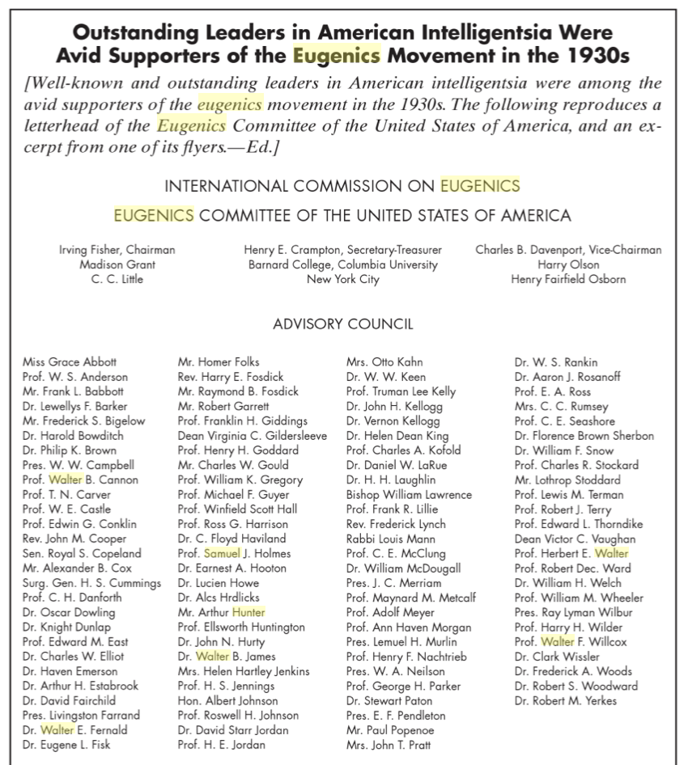

American Psychological Presidents (first 50)
- Yakushko (2019b) writes that 31 APA presidents between 1892 -1947 were affiliated with or leaders in eugenics movements. Need to fill this list out (also it extends past 1947 as we will see)
1892 Granville Stanley Hall
- Noted as joining as new active member of the Eugenics Record Office in the Eugenical News
- Founded the “Journal of Race Development”, see Blatt (2004)
- on the point of view toward primitive races Hall (1910)
1893 George Trumball Ladd
- his presidential address is published in the first issue and volume of Psychological Review. He does not use the word eugenics, but appears to dogwhistle to the eugenicists in the room in his closing paragraphs about improving society. Also, many of the authors in the first issue of Psyc Review, were eugenicists
- contributing editor and author at Journal of Race Development
1895 James McKeen Cattell
- wikipedia page
- Founded Psychological Review, as journal of APA
- bought Science, editor for 50 years
- APA president 1895
- Eugenicist, attempted to development intelligence tests that didn’t quite work out, presumably for the purposes of eugenics. This is a nice example of efforts that pre-date Binet’s IQ test to develop “scientific” mental tests for the purposes of eugenics.
- CATTELL, J. M . Families of American Men of Science. Pop. Sci. Mo., 1915, 86, 504-515.
- APS has been a giving a yearly Cattell award for contributions to science since 1992 https://en.wikipedia.org/wiki/James_McKeen_Cattell_Fellow_Award
- see his paper: THE CAUSES OF THE DECLINING BIRTH RATE Professor J. McKeen Cattell, in Proceedings of the First National Conference on Race betterment
1897 James Mark Baldwin
- The mental development in the child and race: methods ands processes (Baldwin 1900)
1898 Hugo Munsterberg
- Is written up in the eugenical news as a fine speciman, “Sensorium of a Psychologist”, Eugenical News, Vol VII, No. 10, October 1922
1899 John Dewey
- Keeps coming up in the context of eugenics and education…need to learn more
- Yakushko (2019b) points out that Dewey & Gordon Allport were anti-eugenics.
- Dewey, J. (1917). Internal social reorganization after the war. J. Race Dev., 8, 385.
1900 Joseph Jastrow
- Had an interest in psychic phenomena
- (Jones and Thissen 2006), describe how Jastrow was a proponent of Galton in the US, established a lab in Chicago alongside Franz Boas (an anthropologist who advocated against eugenics, Boas (1916)).
- Wrote on the science of “human quality” (Jastrow 1921)
- listed in eugenical news as an active researcher
1901 Josiah Royce
- Philosopher (American Idealism)
- At harvard, apparently convinced Robert Yerkes to combine his interests and do psychology
- Gets written up in the eugenical news at least once
- haven’t spent time to look into his writing (or lack thereof on eugenics)
1902 Edmund Clark Sanford
- Supervised Lewis Terman, who created Stanford-Binet IQ test
- Acknowledged as helping out with a dissertation on “The Psychology of Superior Children” (Richards-Nash 1924)
1903 William Lowe Bryan
- did some work on aquiring telegraph skill, touched all the bases of modern work on transcription skill.
- President of the Indiana Society for Mental Hygiene (elected 1919)
1905 Mary Whiton Calkins
- First Female APA president!
- Student of William James
- has some writing on ethics, espouses progressive views (Calkins 1918)
1906 James Rowland Angell
- Also eventual president of Yale and eugenics proponent
- Supervisor of J. B. Watson
- See Doyle (2014) on eugenics in Psychology at Yale
- Did early mental chronometry research
- Expressed some of his racialized views of intelligence in Angell (1922)
1908 George Malcolm Stratton
- From wikipedia, Stratton served in the Army during World War I, developing psychological tests to select airmen for Army aviation
- Did prism experiments (upside-down looking)
- published lots of different esoteric things, on feats of memory, to anger in cattle, to how cattle get excited by blood
- Some discussion of Stratton’s role in driving research effort into African Americans (Yudell 2014).
1910 Walter Bowers Pillsbury
- from http://www.cyberus.ca/~pballan/Pillfina.htm: This personal brush with political prejudice did not change Pillsbury’s official scientific stance on race and mental degeneracy. His Education as the Psychologist Sees It (1920), for instance, was part of a successful nationwide postwar marketing campaign advocating the use of new group “mental testing” techniques in American schools. Here, Pillsbury uncritically combined past eugenic twin-studies with the new “Army Alpha and Beta” intelligence testing data. Surprisingly, his personal conclusion after thirty-three years of teaching is “that one can never produce intelligence by education, that one must begin much farther back in actually insuring the birth of intelligent people” (p. 46). [p. 525] At this time, however, Pillsbury was just one of many psychologists who accepted such notions (e.g., R. M. Yerkes, Psychological Examination in the United States Army [1921]; W. S. Hunter, General Psychology [1919]; R. S. Woodworth, Psychology [1921]).
1911 Carl Emil Seashore
- Seashore, music and eugenics: http://www.brooklyn.cuny.edu/web/academics/centers/hitchcock/publications/amr/v48-2/devaney.php
- Seashore wrote extensively on eugenics and euthenics
- Member of Advisory Council: International commission on eugenics, Eugenics committee of the United States of America
1912 Edward Lee Thorndike
- wrote extensively on eugenics
- E. L. Thorndike (1940)
- Edward L. Thorndike (1913)
- Member of Advisory Council: International commission on eugenics, Eugenics committee of the United States of America
- “the human nature club”
1913 Howard Crosby Warren
- SEP society gives the HC Warren medal every year
- Listed as a new active member of Eugenics Research Association in Eugenical News
1914 Robert Sessions Woodworth
- obit appears in the Eugenics Review (Welford 1961)
- see discussion on Woodworth’s eugenics at Columbia (Rupert and Jones 2019)
- Member of Advisory Council: International commission on eugenics, Eugenics committee of the United States of America
1915 John Broadus Watson
- The famous behaviorist
- Listed as a eugenics researchers in the Eugenical News
- Angell was his advisor
- John B. Watson (1914, 1919), a behaviorist and a eugenicist,
experimented on many orphans, frequently in sadistic ways, to promote
the social engineering of people to become happy and efficient (from
yakushko)
- Watson, J. B. (1914). Behavior: An introduction to comparative psychology. New York, NY: H. Holt.
- Watson, J. B. (1919). Psychology: From the standpoint of a behaviorist. Philadelphia, PA: Lippincott.
- Read yakushko’s chapter on Watson in Scientific Pollyanaism
1916 Raymond Dodge
- From Doyle, “Dodge was also pleased that his research in human variability and psycho- psychology was so valued by the prospective Institute. While Dodge never publicly identified as a eugenicist, he applauded the National Origins Act of 1924 and was a proponent of applying psychological research to public discourse on selective immigration.93”
- did some IQ testing in the war
1917 Robert Mearns Yerkes
- Implemented the Alpha and Beta IQ tests on the Army (1.5 - 2 million army men tested).
- Pretty clear from his report (Yerkes 1923), that he wanted the tests to validate whites becoming officers, and “morons” and immigrants and blacks to be fodder for the front line, or otherwise eliminated
- Member of Advisory Council: International commission on eugenics, Eugenics committee of the United States of America
- Yerkes, R. M. (1918). Psychology in relation to the war. Psychological Review, 25(2), 85–115.
1919 Walter Dill Scott
- intelligence tester, early IO psychology, e.g., applying scientific selection to salesmen Scott, Bingham, and Whipple (1915)
- wikipedia suggests Scott followed in the Galton eugenics tradition, maintained similar elitist views
1920 Shepard Ivory Franz
- went to school with Thorndike, studied under Cattell
- wrote “Psychology as life work” with Thorndike and others, Dodge et al. (1923)
- Haven’t found specific eugenic writings from Franz
- From Yakushko, “For example, S. Franz (APA president in 1920) and J. Dashiell (APA president in 1938), while not listed as eugenic leaders, published numerous positive reviews of eugenic works with titles such as “The Field of Eugenic Reform”. ”
1921 Margaret Floy Washburn
- first woman to get a Ph.D. in Pysch
- studied under Cattell & Titchener, did comparative cognitive
- from Yakushko, “M. Washburn, APA president in 1921, one of few female APA presidents, not only published positive reviews of eugenic books but also produced studies on supposed differences in national character showing the “striking national difference” apparently found between Jewish participants’ lack of empathy in contrast to their non‐Jewish counterparts (Washburn, 1923, p. 429).”
1922 Knight Dunlap
- Author of “Personal Beauty and Racial Betterment” Dunlap (1920)
- Member of Advisory Council: International commission on eugenics, Eugenics committee of the United States of America
1923 Lewis Terman
- APA president 1923
- Adapts Alfred Binet’s IQ test to English at Stanford, creating the Standford-Binet IQ test.
- See his eugenic views on feeble-mindedness in school children in California (Terman 1917)
- Member of Advisory Council: International commission on eugenics, Eugenics committee of the United States of America
- TERMAN, L. M . Research in Mental Deviation Among Children. Research Lab. Buckel Foundation, Stanford Univ., 1915, 2, 1-15.
1925 Madison Bentley
- author of Mental Inheritance (1909) https://en.wikisource.org/wiki/Popular_Science_Monthly/Volume_75/November_1909/Mental_Inheritance
1926 Harvey A. Carr
- Carr, H. A., & Kingsbury, F. A. (1938). The concept of traits. Psychological Review, 45(6), (497?)–524. https://doi.org/10.1037/h0063048
- Carr, H. A., & Kingsbury, F. A. (1938). The concept of ability. Psychological Review, 45(5), 354–376. https://doi.org/10.1037/h0055419
- Haven’t found specific eugenic writing
1927 Harry Levi Hollingworth
- advocates for eugenics in the book “Vocational Psychology” Hollingworth and Hollingworth (1916)
1928 Edwin Garrigues Boring
- credited with founding the history of psychology discipline
- worked with Yerkes doing IQ testing in the military
- Eugenics views unclear, seems to not discuss the topic so much when he writes his histories
1930 Herbert Sidney Langfeld
- writes on eugenics related issues here Langfeld (1949), but focuses more on the nature/nuture debate, and seems to take a neutral side on eugenics, which references in terms of “political” takes on the issues.
1931 Walther Samuel Hunter
- From wikipedia, this is a perfect description of accidental eugenics, “Hunter served in the military for sixteen months during World War I. He was the chief psychological examiner in three army camps.[2] During that time he compiled bar graphs with E.S. Jones that showed the predictive value of group psychological tests.[3] His work persuaded government officials to continue the testing program, which ultimately led military officials to order the recording of data on the national origins of the troops tested.[3] The data collected was used in a way that Hunter did not approve; combining the psychological test scores with the location of where the individual grew up supported the notion of Nordic superiority, which was not his intention.[3]”
- Might be worth reading Hunter’s delayed reaction research in animals and children (Hunter 1917). On the hand, it seems that Yerkes advocated that tests of delayed reaction ability could distinguish humans from infra-humans. And, on the other hand, the results were used in the context of debate about mental representations.
1932 Walter Richard Miles
- hired by Terman at Stanford, trained by Carl Seashore, married a psychologist who studied gifted children.
- A funny story about not getting to meet Pearson on a lab visit https://thepsychologist.bps.org.uk/volume-25/edition-8/looking-back-walter-miles-and-his-grand-tour
- wrote a biography of RM Yerkes. Miles, W. R. (1946). Robert Mearns Yerkes. American Psychologist, 1(6), 175–178. This biography leaves out Yerkes’ eugenics. Although it show a painting of Yerkes set in front of a tree, which seemse obviously connected to his eugenics.
- did a bunch of intelligence testing work
- Miles (1935) talks around eugenics issues and human superiority in terms of longevity, calls for more developmental research in the tradition of Cattell’s individual difference work.
1933 Leon Luis Thurstone
- famous for his statistical approaches to intelligence testing.
- So far haven’t read Thurstone closely and haven’t found clear indications of his views on eugenics. However, it is interesting to read comments on his work by eugenicists (e.g., Thomson (1946)). So, how does Thurstone explain his work knowing that eugenicists are highly interested in it for the purposes of eugenics?
- consider Thurstone in the context of racist ideologies of the time Samelson (1978)
1934 Joseph Peterson
- Peterson, J., & Lanier, L. H. (1929). Studies in the comparative
abilities of whites and negroes. Mental Measurement Monographs.
- where they conclude whites are superior.
1935 Albert Theodore Poffenberger
Relation to Thomas Poffenberger? of Poffenberger, T. (1963). Two thousand voluntary vasectomies performed in California: background factors and comments. Marriage and Family Living, 25(4), 469-474.
Generally an advocate for appling testing everywhere to make sure everyone goes into their pre-ordained slot in life.
Some work on testing and predicting success in life from school grades. Poffenberger, A.T. (1925). School achievement and success in life. Journal of Applied Psychology, 9(1), 22–28.
Poffenberger, A. T., & Carpenter, F. L. (1924). Character Traits in School Success. Journal of Experimental Psychology, 7(1), 67–74. This paper is a good example of value-free science. There is an effort to expand testing in schools beyond IQ tests to include other tests measuring traits that also predict performance…e.g., fill in the gaps that IQ misses in terms of variance explained. However, very little is said about what how these tests would be used in society, even though it is clear from the authors own collegial associations that “better” tests would certainly be put to use for eugenics purposes.
Poffenberger (1922) This paper is basically full on eugenics without using the word. Poffenberger describes how IQ tests can be used to slot people into professions that they are “suitable” for given their IQ. It is an argument to keep “low IQ workers” in their place as laborers, and given the best jobs to people with high IQ, and to worry about how the economy may collapse if people aren’t slotted in based on their IQ.
Poffenberger (1930) carries on in the tradition of Galton & Cattell to ask what factors make men of science great. Maintains a thin veneer with respect to avoiding commentary on eugenics.
-
Highly relevant account of the activities of the national research council 1919-1933 (division of anthropology & Psychology), wherein it obvious just how many activities were eugenic in nature. Poffenberger (1933)
- consider also the previous chairmen of the committee:
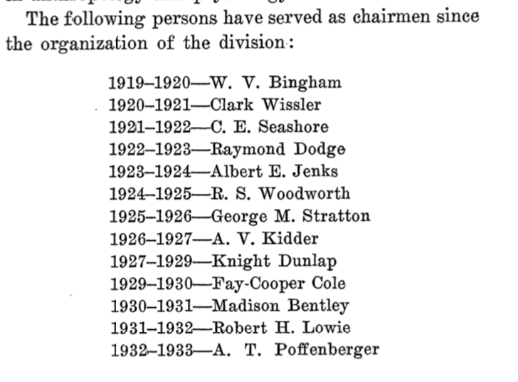
- W.V. Bingham is registered as an active researcher int he Eugenical NEws
- Clark Wissler is on the Eugenics commitee of the USA
- C. E. Seashore is on the Eugenics commitee of the USA
- Raymond Dodge, see above
- Albert E. Jenks wrote “Some Aspects of the Negro Problem,” Science 35 (April 26, 1912): 667.
- R.S. Woodworth is on the Eugenics commitee of the USA
- George M Stratton see above
- AV Kidder, noted as having extended correspondence with Charles Davenport (director of the Eugenics record office) Society, Library, and Catlett (1987)
- Knight Dunlap is on the Eugenics commitee of the USA
- Fay-cooper cole, discussing the role of anthropology in eugenics
here “Recent Trends in
Anthropology” (2020),
- see also his role in the Scopes trial (need to clarify what the role was) Pavuk (2018)
- Madison Bentley see above, author of “mental inheritance”
- Robert H Lowie anthropologist, criticizes aspects of Galton and eugenics here Lowie (1920), wonders what to about equality in society given the reality of individual differences
- Poffenberger, see above
List of correspondence between C Davenport (director of eugenics record office) and other folks, from Society, Library, and Catlett (1987)

1936 Clark Leonard Hull
- from wikipedia, early on did some aptitude testing, enjoyed debating Lashley on his views of inherited intelligence
- Hull worked within a theoretical context of Pavlov, Watson, & Thorndike, all of whom were proponents of eugenics
- Read this to begin to grasp Hull’s eugenics Morawski (1986)
- Read Hull’s idea books “Idea Book, 1927-1930,’ Clark L. Hull Papers, Sterling Library, Yale University.


1937 Edward Chace Tolman
- 1950s U of C oath
- did some mental testing
- Tolman, E. C. (1918). Performance Norms for Thirteen Tests.
- Tolman, E. C. (1918). Mental Examination.
- E.C. Tolman The inheritance of maze-running abiliity in rats, J.
Comp. Psychol., 4 (1924), pp. 1-18
- So this is where Tolman actually attempts to breed rats to see if they improve in their intelligence at running a maze, seemed to have abandoned this line of work after basically finding nothing.@wahlstenGeneticExperimentsAnimal1972
1938 John Frederick Dashiell
- advised by John Dewey
- from Yakushko, …J. Dashiell (APA president in 1938), while not listed as eugenic leaders, published numerous positive reviews of eugenic works with titles such as “The Field of Eugenic Reform”.
1939 Gordon Willard Allport
- An advocate against eugenics (from Tucker, W. H. (1996). The science and politics of racial research. Urbana‐Champaign, IL: University of Illinois Press.)
- personality psychologist
- Interested to learn more about how Allport was anti-eugenics while also continuing to do research of interest to eugenicists. Allport, G. W. (1921). Personality and character. Psychological Bulletin, 18(9), 441–455.
- Allport’s prejudice scale, research into the racism and prejudice as components for explaining the Holocaust.
1940 Leonard Carmichael
- wrote a bio on Yerkes. Carmichael, L. (1957). Robert Mearns Yerkes 1876-1956. Psychological Review, 64(1), 1–7
- Carmichael, L. (1934, September). The psychology of genius. In National Forum (Vol. 14, No. 3, p. 149). Honor Society of Phi Kappa Phi.
- Carmichael, L. (1925). Heredity and environment: Are they antithetical? Journal of Abnormal and Social Psychology, 20, 245–260.
- connection to W. McDougall Rose (2016)
1941 Herbert Woodrow
- first cousin of Woodrow Wilson
- From wikipedia, In 1919, Woodrow wrote Brightness and Dullness in Children. A review in The Journal of Education said, “Dr. Herbert Woodrow has made a distinct and remarkable contribution to progress in his emphasis of the distinction between ‘Dullness and Brightness in Children.’ It is a work that simply must be carefully read by every one who desires to demonstrate intelligence in the study of intelligence.
- Lowell, F., & Woodrow, H. (1922). Some data on anatomical age and its relation to intelligence. The Pedagogical Seminary, 29(1), 1-15.
- Woodrow, H. (1917). Practice and transference in normal and feeble-minded children. Journal of Educational Psychology, 8(2), 85.
- Woodrow, H. (1945). Intelligence and improvement in school subjects. Journal of Educational Psychology, 36(3), 155.
- Woodrow, H. (1921). Intelligence and its measurement: A symposium–XI. Journal of Educational Psychology, 12(4), 207.
- scary…Arthur, G., & Woodrow, H. (1919). An absolute intelligence scale: A study in method. Journal of Applied Psychology, 3(2), 118.
1942 Calvin Perry Stone
- worked with Yerkes and Lashley
- Stone, C. P. (1932). Wildness and savageness in rats of different strains.
- Stone, C. P. (1947). Losses and gains in cognitive functions as related to electro-convulsive shocks. The Journal of Abnormal and Social Psychology, 42(2), 206.
- Stone, C. P., & Barker, R. S. (1937). Aspects of personality and intelligence in postmenarcheal and premenarcheal girls of the same chronological age. Journal of Comparative Psychology, 23(3), 439.
- Stone, C. P. (1943). Multiply, vary, let the strongest live and the weakest die—Charles Darwin. Psychological Bulletin, 40(1), 1–24.
- Eriksen, C. W., Porter, P. B., & Stone, C. P. (1948). Learning ability in rats given electroconvulsive shocks in late infancy. Part I. Journal of comparative and physiological psychology, 41(2), 144.
- Stone, C. P., & Wechsler, D. (1945). Wechsler Memory Scale Form II. Psychological Corporation.
- Burlingame, M., & Stone, C. P. (1928). Family resemblance in maze-learning ability in white rats. Publ. School Publishing Company.
- Commins, W. D., & Stone, C. P. (1932). Effects of castration on the behavior of mammals. Psychological Bulletin, 29(7), 493.
- Stone, C. P. (1921). Comparative Study of the Intelligence of 399 Inmates of the Indiana Reformatory and 653 Men of the United States Army. J. Am. Inst. Crim. L. & Criminology, 12, 238.
First 50 notes
I need to pause for a bit. I’ve been quickly trying to sketch out some connections between APA presidents and eugenics. Mostly this involves googling their name and eugenics, and pulling the string.
My main aim in making these connections is to draw attention to the larger pattern of institutional eugenics within the discipline of Psychology. I am less interested about whether or not specific individuals were “card-carrying” eugenicists, or really truly held eugenics views in their “soul” or not. I think it is enough to establish the pattern and spread of eugenic ideology to consider how eugenics shaped the discipline. For example, I suspect that rampant eugenics had a part to play in systemically limiting the diversity of faculty in Psychology. I suspect it also guided the questions we ask, and continue to ask.
So, as a part of reflecting on what I am doing, I drew up a quick spreadsheet of the APP presidents. For the first 50, I gave them each a eugenics score from 0 to 1, with some intermediate scores representing eugenics adjacent work. These are just some rough personal qualitative estimates, to put a number on things. My rough numberization adds up to 34.75 of 50 APA presidents were into eugenics or eugenics adjacent research. Very few were ever explicitly anti-eugenics.
Consider a sentence like, “It is overwhelming the case that the first 50 years of American Psychology as measured by APA presidents research interests and leadership demonstrate that the discpline of psychology was primarily constructed as arm of the national eugenics movement in the USA”. I just wrote that sentence, and I’m starting to think that I’m not exaggerating.
More APA presidents from 1943
1943 John Edward Anderson
- The modern baby book, similar to Galton. From Smith in Schwartz, Przyblyski, and Routledge (2004)

1944 Gardner Murphy
- psi, worked with W McDougall
- His correspondence in a Eugenics Society is preserved https://www.kshs.org/index.php?url=archives/297369
- https://slowlorisblog.files.wordpress.com/2014/03/2013-history-of-science-society-these-hindering-forces.pdf
- Gardner Murphy, A research Program for Qualitative Eugenics, Eugenics Quarterly, 1, 1954, 209-12.
1945 Edwin R. Guthrie
- involved in testing with military, mainly a learning psychologist in the behaviorist tradition?
- Guthrie, E. R. (1950). The status of systematic psychology. American Psychologist, 5(4), 97.
- Guthrie, E. R. (1927). Measuring introversion and extroversion. The Journal of Abnormal and Social Psychology, 22(1), 82.
- Guthrie, E. R. (1924). Purpose and mechanism in psychology. The Journal of Philosophy, 21(25), 673-681.
- Guthrie, E. R. (1938). The Psychology of Human Conflict; Harper and Brothers.
- Maybe get a sense of what he thought about Hull’s aptitude testing book in this review: Guthrie, E. R. (1929). Review of Aptitude Testing [Review of the book Aptitude testing, by C. L. Hull]. Journal of Educational Psychology, 20(3), 236–237. Basically an uncritical take.
1946 Henry E. Garrett
- his wikipedia entry is enough to establish Garrett’s racist and eugenics views https://en.wikipedia.org/wiki/Henry_Garrett_(psychologist)
- Supported Carleton Putnam’s pamphlet titled Race and Reason—A Yankee View.
1947 Carl R. Rogers
- a humanist psychologist (hopefully not like Maslow’s version of eugenical humanism?)
- relation to genetics counseling? Resta (n.d.)
- nondirectional counselling, seems to be doing something different than genetic counseling, perhaps not into eugenics, or at least doing something in response to eugenics in the clinical domain
1948 Donald G. Marquis
- worked with Terman and Woodworth
- Marquis, D. G. (1948). Research planning at the frontiers of science. American Psychologist, 3(10), 430.
- Wolfle, D., Likert, R., Marquis, D. G., & Sears, R. R. (1949). Standards for appraising psychological research. American Psychologist, 4(8), 320.
- Marquis, D. G. (1930). The criterion of innate behavior. Psychological Review, 37(4), 334.
- Marquis, D. G. (1944). The mobilization of psychologists for war service. Psychological Bulletin, 41(7), 469.
- Marquis, Donald G. “Social psychologists in national war agencies.” Psychological Bulletin 41, no. 2 (1944): 115.
- Marquis, D. G. (1944). Research program on psychomotor tests in the army air forces. Psychological Bulletin, 41, 307-321.
- Marquis, D. G. (1947). Psychology of social change. The Annals of the American Academy of Political and Social Science, 249(1), 75-80.
- Marquis, D. G. (1950). Report of the social science division of the study committee. New York: Ford Foundation Archives.
- racial categories in the Woodworth and Marquis (1947) edition of his text, from “Winston, A. S., Butzer, B., & Ferris, M. D. (2004). Constructing difference: Heredity, intelligence, and race in textbooks, 1930-1970. In A. S. Winston (Ed.), Defining difference: Race and racism in the history of psychology (p. 199–229). American Psychological Association.”
1949 Ernest R. Hilgard
- did hypnosis, learning
- wrote a bio on yerkes, Hilgard, Earnest R. 1965. Biographical Memoir of Robert Mearns Yerkes, 1876–1956. Vol. 38, National Academy of Sciences Biographical Memoirs. Washington, DC: National Academy of Sciences, 1877–2014.
- Hilgard, E. R. (1987). Psychology in America: A historical survey. Harcourt Brace Jovanovich.
- Hilgard, E. R. (1949). Human motives and the concept of the self. American Psychologist, 4(9), 374.
- Hilgard, E. R. (1974). Ernest Ropiequet Hilgard. In G. Lindzey (Ed.), Century psychology series. A history of psychology in autobiography, Vol. 6 (p. 131–160).
- Morgan, A. H., Hilgard, E. R., & Davert, E. C. (1970). The heritability of hypnotic susceptibility of twins: A preliminary report. Behavior Genetics, 1(3-4), 213-224.
- Hilgard, E. R., Weitzenhoffer, A. M., Landes, J., & Moore, R. K. (1961). The distribution of susceptibility to hypnosis in a student population: A study using the Stanford Hypnotic Susceptibility Scale. Psychological Monographs: General and Applied, 75(8), 1.
- Hilgard, E. R., Leary, D. E., & McGuire, G. R. (1991). The history of psychology: A survey and critical assessment. Annual Review of Psychology, 42(1), 79-107.
- Hilgard, E. R. (1978). American psychology in historical perspective: Addresses of the presidents of the American Psychological Association, 1892–1977. American Psychological Association.
1950 Joy Paul Guilford
- intelligence tester, titchener student
- Guilford, J. P. (1967). The nature of human intelligence.
- Guilford, J. P. (1956). The structure of intellect. Psychological bulletin, 53(4), 267.
- Guilford, J. P. (1957). Creative abilities in the arts. Psychological review, 64(2), 110.
- Guilford, J. P. (1982). Cognitive psychology’s ambiguities: Some suggested remedies. Psychological review, 89(1), 48.
- Guilford, J. P., & Guilford, R. B. (1936). Personality factors S, E, and M, and their measurement. The journal of Psychology, 2(1), 109-127.
- How does Guilford address eugenics?
- Guilford, J. P. (1968). Intelligence Has Three Facets: There are numerous intellectual abilities, but they fall neatly into a rational system. Science, 160(3828), 615-620.
- Guilford, J. P. (1939). A study in psychodynamics. Psychometrika, 4(1), 1-23.
1951 Robert R. Sears
- https://psychology.wikia.org/wiki/Genetic_Studies_of_Genius
- Sears, R. R. (1977). Sources of life satisfactions of the Terman gifted men. American Psychologist, 32(2), 119.
- Sears, R. R. (1950). Ordinal position in the family as a psychological variable. American Sociological Review, 15(3), 397-401.
- Farber, M. L., Lewin, K., & Sears, R. R. (1944). Suffering and time perspective of the prisoner. University of Iowa Press.
- Davalos, L. M., Sears, R. R., Raygorodetsky, G., Simmons, B. L., Cross, H., Grant, T., … & Porzecanski, A. L. (2003). Regulating access to genetic resources under the Convention on Biological Diversity: an analysis of selected case studies. Biodiversity & Conservation, 12(7), 1511-1524.
- Sears, R. R., & Feldman, S. S. (Eds.). (1973). The seven ages of man. W. Kaufmann.
- Sears, R. R. (1951). Symposium on genetic psychology: 3. Effects of frustration and anxiety on fantasy aggression. American Journal of Orthopsychiatry, 21(3), 498.
- Sears, R. R. (1947). Child psychology.
1952 JMV HUNT
- Hunt, J. M. (1969). Has compensatory education failed? Has it been attempted?. Harvard Educational Review, 39(2), 278-300. Argues against Jensen.
- Hunt, J. M. (1961). Intelligence and experience.
- Hunt, J. M. (1969). challenge of incompetence and poverty.
- Hunt, J. M. (1970). Attentional preference and experience: I. Introduction. The Journal of Genetic Psychology, 117(1), 99-107.
- Hunt, J. M. (1966). The psychological basis for using preschool enrichment as an antidote for cultural deprivation. In Experience Structure & Adaptability (pp. 235-276). Springer, Berlin, Heidelberg.
- Hunt, J. M. (1982). Toward equalizing the developmental opportunities of infants and preschool children. Journal of Social Issues, 38(4), 163-191.
- Hunt, J. M. (1981). A Critical Look at Intelligence Testing.
- Some pushback from Hunt
1953 Laurance F. Shaffer
- Mental hygiene promoter
- Shaffer, L. F., & Shoben, E. J. (1936). The psychology of adjustment: An objective approach to mental hygiene (Vol. 487). Houghton Mifflin.
- Why does that sound so similar to racial hygiene?
1954 O. H. Mowrer
- involved in the Harvard Department of Social Relations, apparently a response to the Yale Institute of Human Relations
- interesting stuff on the wikipedia page https://en.wikipedia.org/wiki/Orval_Hobart_Mowrer… you are your secrets
- “Hobart Mowrer was an advocate of the idea that mental illness has a substantial biological and genetic basis. He held this conviction in spite of his equally strong belief in the importance of the”pathogenic secret.” Mowrer accepted the importance of biological factors at a time when many people did not, and was in this respect ahead of his time. He regarded his own affliction as in some sense a “gift,” the driving force behind his innovative ideas, but also the great misery of his life.”
- Page, C. (2017). Preserving guilt in the “age of psychology”: The curious career of O. Hobart Mowrer. History of Psychology, 20(1), 1.
- Mowrer, O. H. (1979). Is Much Psychotherapy Still Misdirected or Misapplied?. Canadian Journal of Counselling and Psychotherapy, 13(3).
- Fiordo, R. (1981). Integrity training: A moral code and method for moral education. The Journal of Educational Thought (JET)/Revue de la Pensée Educative, 47-60.
- Weiss, R. P. (2006). The American Culture of Torture: A Review Essay.
1955 E. Lowell Kelly
- worked with Terman
- marital compatibility Kelly, E. L., & Conley, J. J. (1987). Personality and compatibility: A prospective analysis of marital stability and marital satisfaction. Journal of personality and social psychology, 52(1), 27.
- Kelly, E. L. (1955). Consistency of the adult personality. American Psychologist, 10(11), 659.
- Westoff, C. F., Mishler, E. G., & Kelly, E. L. (1957). Preferences in size of family and eventual fertility twenty years after. American Journal of Sociology, 62(5), 491-497.
- Seems like eugenics adjacent work…e.g., how to get good people to have marriages that allow good people to breed? Maybe I’m reading to much into it
1956 Theodore M. Newcomb
- worked with several other psychologists interested in eugenics https://en.wikipedia.org/wiki/Theodore_Newcomb
- Newcomb, T. M. (1956). The prediction of interpersonal attraction. American psychologist, 11(11), 575.
- need to follow up more here, maybe Smith (1992)
1957 Lee J. Cronbach
- central in testing and validity theory
- discusses mental testing here Cronbach (n.d.), basically says that science must go on unimpeded, regardless of the smell.
- participated as a child in terman studies of children, wow. https://en.wikipedia.org/wiki/Lee_Cronbach
1958 H. F. Harlow
- Advised by Terman (public eugenicist)
- Abraham Maslow was his student (private eugenicist)
- social deprivation monkeys guy
- Woolsey, C. N., & Harlow, H. F. (Eds.). (1958). Biological and biochemical bases of behavior. University of Wisconsin Press.
- breadcrumbs about harlow with respect to scientific racism Shockley (1972)
- Harlow, H. F. (1936). The neuro-physiological correlates of learning and intelligence. Psychological Bulletin, 33(7), 479.
- Farber, I. E., Harlow, H. F., & West, L. J. (1957). Brainwashing, conditioning, and DDD (debility, dependency, and dread). Sociometry, 20(4), 271-285.
- SUOMI, S. J., & HARLOW, H. F. (1977). Genetics, environment and intelligence, edited by A. Oliverio© Elsevier/North-Holland Biomedical Press, 1977. Genetics, Environment, and Intelligence, 197.
- Harlow, H. F. (1977). Intelligence in Ape and Man.
- Harlow, H. F., Harlow, M. K., Schiltz, K. A., & Mohr, D. J. (1971). The effect of early adverse and enriched environments on the learning ability of Rhesus monkeys. In Cognitive processes of nonhuman primates (pp. 121-148). Academic Press.
1959 Wolfgang Köhler
- gestalt psychology
- Henle, M. (1978). One man against the Nazis: Wolfgang Köhler. American Psychologist, 33(10), 939.
- Lewin, K. (1986). “Everything within me rebels”: A letter from Kurt Lewin to Wolfgang Köhler, 1933. Journal of Social Issues, 42(4), 39-47.
- Köhler, W., & Guillaume, P. (1928). L’intelligence des singes supérieurs.
- Arnheim, R. (1998). Wolfgang Köhler and gestalt theory: An English translation of Köhler’s introduction to Die physischen Gestalten for philosophers and biologists. History of Psychology, 1(1), 21.
- Köhler, W. (1925). An aspect of Gestalt psychology. The Pedagogical Seminary and Journal of Genetic Psychology, 32(4), 691-723.
- Köhler, W. (1926). Intelligence of apes. In Powell Lecture in Psychological Theory, Apr, 1925, Clark University, Worcester, MA, US; Portions of this research were presented at the Powell Lecture in Psychological Theory at Clark University, April 30, 1925.. Clark University Press.
- Köhler, W. (1937). Psychological remarks on some questions of anthropology. The American journal of psychology, 50(1/4), 271-288.
1960 Donald O. Hebb
- Did some intelligence testing early on, been around the block, applied to work with Yerkes, ended up working with Lashley.
- https://ahrp.org/1951-cias-psychological-torture-is-rooted-in-experiments-at-dachau-project-artichoke-mk-ultra/
- http://www.ferris-pages.org/ISAR/archives2/mental.htm Steven A. Gelb, Garland E. Allen, Andrew Futterman and Barry A. Mehler, “Rewriting Mental Testing History: The View from the American Psychologist,” originally published in Sage Race Relations Abstracts 11 #2 (May 1986) pp. 18-31.
- Obviously there are some issues with Hebb. See also Zubek at U of Manitoba.
1961 Neal E. Miller
- spent time at IHR at Yale
- look at Miller’s Neurotree…worked with Hull
- Dollard, J., Miller, N. E., Doob, L. W., Mowrer, O. H., & Sears, R. R. (1939). Frustration and aggression.
- Miller, N. E., & Dollard, J. (1941). Social learning and imitation.
- Miller, N. E. (1951). Learnable drives and rewards.
- Delgado, J. M., Roberts, W. W., & Miller, N. E. (1954). Learning motivated by electrical stimulation of the brain. American Journal of Physiology-Legacy Content, 179(3), 587-593.
- Miller, N. E. (1948). Theory and experiment relating psychoanalytic displacement to stimulus-response generalization. The Journal of Abnormal and Social Psychology, 43(2), 155.
- Bower, G. H., & Miller, N. E. (1958). Rewarding and punishing effects from stimulating the same place in the rat’s brain. Journal of Comparative and Physiological Psychology, 51(6), 669.
- Miller, N. E., & Bugelski, R. (1948). Minor studies of aggression: II. The influence of frustrations imposed by the in-group on attitudes expressed toward out-groups. The Journal of psychology, 25(2), 437-442.
- Miller, N. E. (1957). Graphic communication and the crisis in education. Audio Visual Communication Review, 1-120.
1962 Paul E. Meehl
- signatory of https://en.wikipedia.org/wiki/Mainstream_Science_on_Intelligence
- Meehl (1978) notably does not mention eugenics here..
- Accepted the APS Cattell award
- Meehl, P. E., & Hathaway, S. R. (1946). The K factor as a suppressor variable in the Minnesota Multiphasic Personality Inventory. Journal of Applied Psychology, 30(5), 525.
- Meehl, P. E. (1986). Causes and effects of my disturbing little book. Journal of personality assessment, 50(3), 370-375.
- Meehl, P. E. (1956). Wanted—a good cook-book. American Psychologist, 11(6), 263.
- Livermore, J. M., Malmquist, C. P., & Meehl, P. E. (1968). On the justifications for civil commitment. U. Pa. L. Rev., 117, 75.
- Meehl, P. E. (1954). Clinical vs. statistical prediction. University of Minnesota Press.
- Meehl, P. E. (1950). On the circularity of the law of effect. Psychological Bulletin, 47(1), 52.
- Meehl, P. E. (1945). The dynamics of” structured” personality tests. Journal of Clinical Psychology.
- Gough, H. G., McClosky, H., & Meehl, P. E. (1952). A personality scale for social responsibility. The Journal of Abnormal and Social Psychology, 47(1), 73.
- Gough, H. G., McClosky, H., & Meehl, P. E. (1951). A personality scale for dominance. The Journal of Abnormal and Social Psychology, 46(3), 360.
- Meehl, P. E. (1972). Specific genetic etiology, psychodynamics, and therapeutic nihilism. International Journal of Mental Health, 1(1-2), 10-27.
- Gottesman, I. I. (1962). Differential inheritance of the psychoneuroses. Eugenics quarterly, 9(4), 223-227….why is Meehl’s work being cited in Eugenics journals?
- Meehl (1998), briefly mentions eugenics and notes he is writing paper about Utopi… Also the paper is about the difficulty of giving asshole scientists awards. gives an object lesson in eugenics and organizations using siamese cats..argues it is inevitable that one will be tainted, just accept it…is he defending Jensen here?
- personal communications about g permeating everything in Webb et al. (2000)
- Peterson, D. R. (2005) Twelve years of correspondence with Paul Meehl: Tough notes from a gentle genius. Erlbaum. [This book may be ordered from Routledge]
1963 Charles E. Osgood
- Notable for his peace psychology, Osgood, C. E. (1964). The psychologist in international affairs. American Psychologist, 19(2), 111.
- Yale, worked with Sears and Hull
- Osgood, C. E., & Suci, G. J. (1952). A measure of relation determined by both mean difference and profile information. Psychological Bulletin, 49(3), 251.
- Osborn, F., Fuller, J. L., & Scott, J. P. (1954). Genetic factors affecting intelligence: Symposium. Eugenics Quarterly, 1(1), 28–43. doi:10.1080/19485565.1954.9987161 cite using Osgood’s above method
- Osgood, C. E., Suci, G. J., & Tannenbaum, P. H. (1957). The measurement of meaning (No. 47). University of Illinois press.
- Shank, D. B. (2010). Trusting technological actors: A foundation in structure and cultural sentiments. In Trust and Technology in a Ubiquitous Modern Environment: Theoretical and Methodological Perspectives (pp. 35-54). IGI Global.
- Ervins, S. M., & Osgood, C. E. (1954). Second language learning and bilingualism. Journal of Abnormal and Social Psychology, 49, 139-145.
- Osgood, C. E., Sebeok, T. A., Gardner, J. W., Carroll, J. B., Newmark, L. D., Ervin, S. M., … & Wilson, K. (1954). Psycholinguistics: a survey of theory and research problems. The Journal of Abnormal and Social Psychology, 49(4p2), i.
- Osgood, C. E., & Luria, Z. (1954). A blind analysis of a case of multiple personality using the semantic differential. The Journal of Abnormal and Social Psychology, 49(4p1), 579.
- Osgood, C. E. (1966). Dimensionality of the semantic space for communication via facial expressions. Scandinavian journal of psychology, 7(1), 1-30.
- Osgood, C. E. (1969). On the whys and wherefores of E, P, and A. Journal of personality and social psychology, 12(3), 194.
- Cook, S., Gibson, J. J., MacFarlane, J. W., Newman, E. B., & Osgood, C. E. (1958). Reports on a Case of Conditions of Employment. American Psychologist, 13(11), 633.
- Triandis, H. C., & Osgood, C. E. (1958). A comparative factorial analysis of semantic structures in monolingual Greek and American college students. The Journal of Abnormal and Social Psychology, 57(2), 187.
- Fiedler, F. E., Osgood, C. E., Stolurow, L. M., & Triandis, H. C. (1963). A Contingency Model for the Prediction of Leader ship Effectiveness (No. TR-10). ILLINOIS UIV AT URBANA GROUP EFFECTIVENESS RESEARCH LAB.
- Finfgeld, T. E., DeVito, J. A., Murphy, R., & Osgood, C. E. (1966). The ability to select words to convey intended meaning. Quarterly Journal of Speech, 52(3), 255-258.
1964 Quinn McNemar
- IQ tester, studied under Terman
- See Catharine Cox Miles, “Psychological Study of a Young Adult Male Pseudohermaphrodite Reared as a Female’ Studies in Personality, Contributed in Honor of Lewis M. Terman, ed. Quinn McNemar and Maud Merrill. New York: McGraw Hill. 1942
- Quinn McNemar and Lewis M Terman. “Sex Differences in Variational Tendency.” Genetic Psychology Monographs 18.1 (1936): 1-66
- McNemar, Q. (1964). Lost: our intelligence? why?. American Psychologist, 19(12), 871.
- McNemar, Q. (1960). At random: Sense and nonsense. American Psychologist, 15(5), 295.
- McNemar, Q. (1940). A critical examination of the University of Iowa studies of environmental influences upon the IQ. Psychological Bulletin, 37(2), 63.
- McNemar, Q. (1975). On so-called test bias. American Psychologist, 30(8), 848.
- McNemar, Q. U. I. N. N. (1938). Special review: Newman, Freeman, and Holzinger’s Twins: a study of heredity and environment. Psychological Bulletin, 35(4), 237.
- BUGENTAL, J., CLARK, K., EBERHART, J., ERICKSEN, S., HARPER, R., HUMPHREYS, L., … & ROGERS, C. (1965). COMMITTEE ON THE SCIENTIFIC AND PROFESSIONAL AIMS OF PSYCHOLOGY-PRELIMINARY-REPORT.
- McNemar, Q. (1945). Note on Wellman’s re-analysis of IQ changes of orphanage preschool children. The Pedagogical Seminary and Journal of Genetic Psychology, 67(2), 215-219.
- from Kuhl
- “Student-led protests, sometimes violent in nature, against public appearances by Jensen, Eysenck, and Shockley produced a situation wherein they perceived a dichotomy between politically blinded critics and “pure” scholars, who were subject to psychoterror, attempts at intimidation, and death threats.123 Eysenck, Jensen, and Herrnstein, in conjunction with ten other American and British academics, suc- ceeded in initiating a resolution defending them against “personal and professional disparagement.”124 Here they placed the criticism that they received for their theory of inheritance in the same tradition as the persecution of “well-known scientist victims, includ[ing],Galileo, in orthodox Italy; Darwin, in Victorian England; Einstein, in Hitler’s Germany; and Mendelian biologists, in Stalin’s Russia.”125 Many of the attacks against the heredity researchers were seen to be made by “non- scientists” or “outspoken enemies of a scientific attitude.” Attacks were also deemed to come from “academics who had determined that any explanation of differences among humans could be traced to the environmental theory.” In the light of the widespread “environment oriented orthodoxy,” there was practically a “witch hunt” against those who held ideas based on heredity or a wish to develop further research work in the area of the biological bases of behavior.
- Notes from 124, “The ten other scholars were Jack A. Adams, Raymond B. Cattell, Francis H. Crick, C. D. Darlington, Charles W. Eriksen, Eric F. Gardner, Quinn McNemar, Eliot Slater, Robert L. Thorndike, Frederick C. Thorne, and Philip E. Vernon; cf. JBA Oxford, G. 14. The activity was at first coordinated by the psychologist Ellis B. Page of the University of Connecticut; cf. Jensen to Dobzhansky, 9/2/1972, THA Philadelphia: Jensen, Arthur R.”
Henry Goddard
- Goddard argued for classifying “feeble-minded” people into classes by IQ, e.g., idiots ~ 20, Imbeciles ~ 40, Morons ~ 70, see Goddard’s “Who is a Moron?” (Goddard 1927).
- The fear was that morons are basically normal competent people who are able to hide in society, but they will also destroy the human race if they are allowed to breed. The only way to discover morons was to IQ test them, and then employ eugenics polices to prevent morons from breeding.
- Member of Advisory Council: International commission on eugenics, Eugenics committee of the United States of America
- GODDARD,H.H. TheAdaptation Board asaMeasureof Intelligence. TrainingSchoolBull.,1915,11,182–188.
- Terman, L. M., Lyman, G., Ordahl, G., Ordahl, L., Galbreath, N., & Talbert, W. (1915). The Stanford revision of the Binet-Simon scale and some results from its application to 1000 non-selected children. Journal of Educational Psychology, 6(9), 551.
Claude Shannon
- completed his masters thesis at Cold Springs Harbor Laboratory (Eugenics Record Office) https://liorpachter.wordpress.com/2013/11/05/claude-shannon-population-geneticist/
- switched to invent information theory aftwerward
Abraham Maslow
- Posthumous journal notes suggest his humanism was rooted in eugenics
- Maslow, Lowry, and Maslow (1982)
Eugenics Publications
- Eugenical News
- The Eugenics Review
- Psychological Index had some eugenics sections
- The Journal of Race development
Human Betterment foundation Eugenics society of America International eugenics conferences
Proceedings of the First National Conference on Race betterment - january 8-12, 1914, Battle Creek Michigan - published by the race betterment foundation
Institutional considerations
Part of the impetus for all of this research is to characterize the widespread acceptance of eugenics in terms of institutions. So far my perspective is that psychology as a discipline has a problem with instutional forms of eugenics and racism. Institutional eugenics is term that could carry broad meaning from literal institutions (e.g., such as the APA), to widely adopted policies in society inspired and propagated by eugenics leaders (e.g., IQ testing).
Some American Institutions to consider in terms of Psychology & Eugenics
- Individual Psychology departments
- APA leadership (See presidents list above)
- SEP membership (honorary societies in psychology)
- AAAS
- Federal government research councils and chairs
Responses by institutions
How have institutions with some involvement in eugenics responded to their involvement? I’ve been wondering about this question the whole time that I’ve learning about eugenics. With respect to eugenics I’m still in the “what happened” phase, and perhaps slowly coming to the “what happened next” phase, which could lead into the “what’s going on right now phase”.
In any case. When I have time I will extract this section and make a post out of it to keep track of info I’m finding. I’ve discovered the internet archive https://archive.org contains an ample amount of historical eugenics literature, so have been collecting some of it. It’s also interesting to search for indvidual psychologists in this database because all sorts of old textbooks come up. More recently, I’ve started coming across government documents, for example the National Research Council has convened multiple panels to assess the impact of certain practices on society, some of these include eugenics related practices.
- University of Alberta, eugenics project in Philosophy department that led to http://eugenicsarchive.ca
- I’ve come across a few department level papers exploring eugenics at Yale, Harvard, need to find them again
- NRC council work: Wigdor, A. K. (1982). Ability Testing: Uses,
Consequences, and Controversies. Educational Measurement: Issues and
Practice, 1(3), 6–8. https://doi.org/10/cr8p3x
- There’s a two volume book, the above is a short summary
- Wigdor has several other related works
even more unorganized notes
https://readingroom.law.gsu.edu/buckvbell/
https://en.wikipedia.org/wiki/International_Federation_of_Eugenics_Organizations
Snippets from Kuhl:
Look up Psychologists of the IFEO psychology committee, like W. Stephenson
The American eugeni- cists continued their research and publication activity unhindered, and in August 1915, 55 the National Conference for Race Betterment met for the second time
the antiracist reinterpretation of the American army intelligence tests in the First World War by the New York anthropologist Otto Klineberg
The second committee, which included the British eugenicists and psychologists Charles Spearman and W. R. S. Stephenson as well as the American researcher on race Morris Steggerda was tasked with making uniform the intelligence tests developed in Europe and America and revising these tests in a way that they could be used for the “psychological examination” of “non- European and primitive peoples.”67 In that way, not only could a direct evaluation of each individual be made possible, but the presumably intellectual abilities and characteristics of the races could be shown quantitatively.
The IFEO Commission for Race Psychiatry that was set up in 1930 was assigned the task of bringing out these differences in the mental and psychological constitu- tion of races.
Test to see why html is not updating on github
Albett, R. S. (1969). Genius: Present-day status of the concept and its implications for the study of creativity and giftedness. American Psychologist, 24(8), 743.
https://en.wikipedia.org/wiki/Frank_C._J._McGurk
https://www.nytimes.com/1973/02/08/archives/dr-clairette-p-armstrong-research-psychologist-86.html
The psychologist Clariette Armstrong, a former member of the Eugenics Research Association, testi- fied to the court for the IAAEE how great a hardship it would be for the Negro child to be in school with brighter, younger Whites, leading to greater delinquency, and so on.59 The IAAEE published and distributed arguments by Henry E. Garrett and Ernest van den Haag for racial segregation in the United States.60
https://en.wikipedia.org/wiki/Audrey_M._Shuey
pg 171 in kuhl Arthur Jensen,
Hans J. Eysenck
Richard Herrnstein, a psychologist at Harvard University, picked up on Jensen’s and Eysenck’s hypotheses.
J. Philippe Rushton, a Canadian professor of psychology, not only received exten- sive support from the Pioneer Fund but after the turn of the century also took over leadership of the fund.
Eysenck, Jensen, and Herrnstein, in conjunction with ten other American and British academics, suc- ceeded in initiating a resolution defending them against “personal and professional disparagement.”124
For many years a large part of the project funds of the Pioneer Fund went for a research project on twins at the University of Minnesota, but the fund has also been involved in almost every piece of research that is intended to determine the psy- chological differences between the races.144 Arthur Jensen alone between 1971 and 1992 received over a million dollars. J. Phillippe Rushton in the same period was able to receive over $770,000 in grant funds from Pioneer. William Shockley, who promoted breeding of the highly gifted and to this end made his own sperm avail- able, received about $200,000 for his various activities in the area of race research. Other race researchers as well, such as the professor of education and psychologist R. Travis Osborne, the psychologist Richard Lynn, the sociologist and professor of education Linda Gottfredson, the sociologist Robert Gordon, and the philosopher Michael Levin, received generous amounts from the Pioneer Fund.145
Mankind Quarterly, he attempted to reinforce international visibility in particular by taking European and American scientists onto the editorial board. He made sure that the eugenic orienta- tion of the journal stayed true by expanding the editorial board with such persons as the Italian anthropologist Bruno Chiarelli, the psychologist Raymond B. Catell,
https://en.wikipedia.org/wiki/Carl_Brigham
Chapman, Paul Davis. Schools as Sorters: Lewis M. Terman, Applied Psychology and ….the American Testing Movement, 1890-1930. New York University Press, 1990. ….(Reprint edition.)
Raymond Cattell (1987), & beyondism
Psychonomics History
I’m learning about influences of eugenics on psychology and society. As a part of this, I’m documenting the eugenics views held by many psychologists, as well as connections between psychologists and eugenics.
Currently my research is highly disorganized, provisional, and unfolding across various blog posts. In this post I am interested in possible connections between eugenics and the Psychonomics Society, of which I am a member and fellow. I’ve been attending Psychonomics since the mid 2000s. Until now, I haven’t looked into the history and formation of Psychonomics. So I’ll do that with an eye out for eugenics.
Before jumping in I’ll say a few things. First, I’m a 40 year old recently tenured cognitive psychologist at Brooklyn College of CUNY. I’ve been around the cognition block in Canada and the US. It never occured to me, and I was never taught, that there were extraordinarily deep connections between eugenics and psychology in the US and Canada. For a quick primer on some of the connections one could read Yakushko (2019b). Although, here one might get the sense that the “pre-history” of psychology (e.g., before 1950s) was heavily influenced by eugenics, and that part just went away. I’m not so sure (in general for the discipline).
I’ve been slowly tracing eugenics and psychology connections leading up to the cognitive revolution, and am about to continue forward past the 1950s. So, a good place to start is in my own backyard. In other words, does the Psychonomic Society have any eugenics connections? As a member I’d like to know.
Yakushko (2019b) had mentioned that 31 APA presidents from 1892 - 1947 were involved in eugenics in explicit ways (wrote on eugenics, members of eugenics societies, etc.). I found this shocking, and have started noting connections between APA presidents and eugenics. My assessment so far is that there are more than 31 APA presidents who were deeply into eugenics, and the history certainly goes past 1947.
Some books I have found useful in describing the vast ways that eugenics permeated society and psychology are the following: Kühl (2013) presents an astounding history of the international organization of eugenics movements, including some discussion of the organization of eugenics within the discipline of psychology. If you thought eugenics was just a minor historical detail, this book may change your mind. An important point here is that it is worth determining how eugenicists organize themselves leadership positions within societies and governments (e.g., the APA presidents). These actions by eugenicists created deep structures of eugenics within society that continue to reverberate today.
Yakushko (2019a) presents a critical look at some aspects of scientific psychology, especially those rooted in eugenics and positive psychology. If you want a primer on some atrocities committed by well-known psychologists, this is an eye-opener. It may also challenge some of your notions about the role of psychology as a science in society, at least when it comes to the difference between science and scientism.
Last, Wilson (n.d.) discusses eugenics in the context of Western Canada (I’m an Alberta boy), where the eugenics policy of forced sterilization was legalized; and he develops a “standpoint theory” of eugenics, which attempts to discuss eugenics from a survivor perspective, as well as advocate for modern society to understand hallmarks of eugenic thinking so as to guard against modern versions of eugenics campaigns. Wilson was also the project director for the wonderful website http://eugenicsarchive.ca.
I found one story from Wilson very inspiring. It turns out the first chair of the Philosophy/Psychology Department at the University of Alberta was the same man who sat on the eugenics board and authorized forced sterilizations until the law was repealed. That department has an institutional legacy of eugenics. That department formed a sub committe in 1998 to assess its own legacy of eugenics, and then respond in some way for the purposes of restorative justice. I commend them for doing that. More Departments need to do this. More societies need to do this. Does Psychonomics need to do this? I don’t know, maybe so…let’s see.
A last word on labelling and offending people. As I am about to go into my own academic backyard and start asking whether my own colleagues have a history of espousing racist and eugenics ideology, I’m assuming some feathers may be ruffled. My intention is to be constructive in learning about these issues and eventually portraying them back to the society (if there is anything to reflect on…haven’t yet started the research). Certainly, some of the terminology may sound offensive, perjorative, and disparaging. However, labels such as “white racist-eugenicist-psychologist” are appopriate for psychologists, who explicitly in their own writing, identify themselves in those terms. For example, white racist-eugenicist-psychologists advocate for the supremacy of the “Nordic races” through positive eugenic policies, and advocate for the oppression,segregation and/or elimination of non-white races through negative eugenics policies.
I’m still thinking through how to discuss connections between eugenics and individual psychologists. For example, some psychologists may justify a label of racist-eugenicist because of their explicit self-identification under those terms, wherease, other psychologists may not because of a lack of explicit evidence. Nevertheless, I’ll entertain the concept of adjacency in considering connections between eugenics and psychology. For example, many psychologists were trained by white racist eugenicists, or worked on topic areas that are of high interest to eugenicists. These psychologists are adjacent to eugenics in some important ways, and may or may not espouse eugenics ideology. In any case, I guess what I am saying is that I will attempt to use labels in a way that elucidates eugenics connections in psychology, for the purposes of understanding potential structural and systemic issues in our discipline that may be fundamentally related to eugenics.
One question I have often wondered when I have attended Psychonomics is “Why is Psychonomics so white?”. Given my newfound interest in eugenics, I am interested in determining whether structural eugenics in Psychology, including in Psychonomics could possibly explain some of the overwhelming lack of diversity.
The above prelude is a work in progress where I am attempting to explain/discover my motivations for doing this work (e.g., this blog is unstable and under active revision, as you can tell from the typos and awkward sentences).
History of Psychonomics
I must confess I am a newbie when it comes to the history of Psychology, and specifically the history of its organizational structure in Canada and in the US. I’ve learned a couple things so far. E. G. Boring (1928 APA president) is often credited with starting the History of Psychology. When I read Boring, I find he doesn’t do a good job of contextualizing the history of Psychology in terms of eugenics. I wonder why (I have my suspicions), he certainly worked with and knew a whole bunch of eugenicist psychologists, and it is incredible to believe that he didn’t know about the ideologies of his colleagues. Maybe he thought the eugenics part was so obvious it went without saying…or maybe not.
As I write this I’m aware that I haven’t read all of the History of Psych journals, so I don’t know whether or how they reconstruct the history of Psychology from the lens of eugenics. Need to read more about this for myself.
There is a tradition in American Psychology of breaking away from the APA (American Psychological Association). The more I learn about the APA, the more I understand why. Psychonomics broke away from the APA, and before looking at that, I wanted to juxtapose the formation of Psychonomics with the formation of another society, The Association of Black Psychology who has been publishing the Journal of Black Psychology since 1974. The ABPsi broke from the APA and in the last half-century have constructed an entire new field in Psychology that is notable for several reasons, including the pursuit of restorative justice for the actions of white racist and eugenicist psychologists against the Black Community. So, I wonder if Psychonomics broke away from the APA for any related reasons…(edit: not so much).
Plan for connecting dots
I went to the Psychonomics website https://www.psychonomic.org/page/about, and found that I could read four papers on the history of Psychonomics. Cool! Thanks Psychonomics. Let’s start with the first paper.
Oops, I got interrupted. FYI, I’m going to write this like a detective novel, so it will be contemporaneous with my discoveries, and sometimes tangential. I admit, I already read the first paper, which is why I am going to talk more about it here. At the end of the paper there was some discussion about the word Psychonomics, and around that discussion there was some word usage common among eugenic texts. So, I ended up doing the thing I always do, but should have done from the beginning, and that is, Google “Psychonomics and eugenics”. I did that and I straightaway I found a paper Cleland, Swartz, and McGavern (1979) published by the Psychonomic Society:
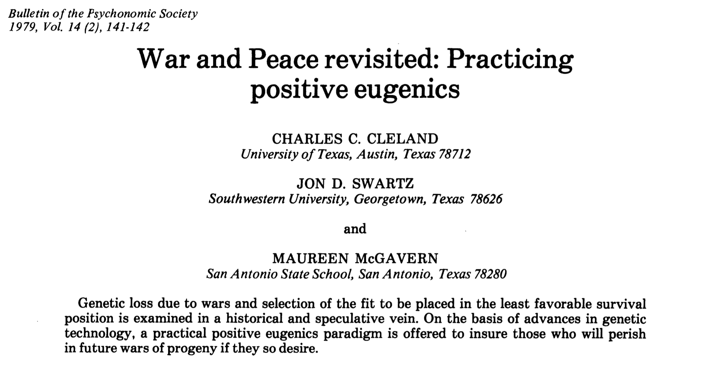
This is an indication to me that the society at one point condoned aspects of eugenics, and also that some eugenics directed archaeology of Psychonomics is necessary. (Edit: I recently learned that at this time (1979) members could publish in this venue effectively without scrutiny, so this paper could easily reflect more on the authors than on the society. See the editorial from Morgan in the first issue).
The founding of Psychonomic Society
OK, back to the first paper on the history of Psychonomics. This one is titled, “The founding of the Psychonomics society” (Dewsbury and Bolles 1995). Before I go through it, it’s worth reminding myself (I used to be a history major) what I learned about “history” in undergrad.
There is opinion and perspective in historical retelling. So I need to wonder, what lens is used here to discuss the beginnings of Psychonomics?
Historical retellings often use the same kinds of tricks. For example, Wilson (n.d.) refers to Ebbinghaus’ quip that “psychology has a long past, but only a short history”. Wilson uses this quip to point out a common narrative structure in historical retelling. In histories of psychology as a science we see the “long” pointers back to the early Greek philosophers. It is often the case that “long” pointing is a way of using juxtaposition to connect some current issue with the significance or value of “well-accepted” historical figures. E.g., psychology continues in the supremely wonderful and great tradition of the righteous and true great traditions of the past…That kind of thing.
I’ll have an eye out for the “long” pointers as I “read between the lines” of the “The founding of Psychonomics”. Let’s go.
Here’s the first bit of the paper:

TLDR, the Psychonomics origin story begins with a bunch of white dudes at a bar. I can totally relate to that, because that is pretty much what my experience is like when I go to Psychonomics.
We learn that this meet-up was at an AAAS meeting (American Association for the Advancement of Science). Now, far be it from me to criticize the AAAS. And, I have not looked too closely at this organization yet. Suffice it to say, let me connect the AAAS with an important person in its history, James McKeen Cattell. Cattell is a notable eugenicist, as well he was an APA president, and he founded Psychological Review, and he bought Science and edited it for 50 years. I haven’t read this paper yet, but it apparently covers some of the eugenics aspects of AAAS (Farber 2008).
OK, so some AAAS affiliated Psychologists go to a bar…and two years later Psychonomics was born. Some of those psychologists were “Clarence Graham of Columbia University, Clifford T. Morgan of Johns Hopkins, S. S. Stevens of Harvard, and William S. Verplanck of Hunter College.” I start looking at the scholarship of the organizers further down.
So, after the origin story, the founding of Pscyhonomics is set in context of the tradition of splintering off from APA, which many other groups do for various reasons.

We are pulled back to into the living room of G. Stanley Hall in 1892, at the dawn of the APA. I would say that Hall was deeply into eugenics, for some connections see.
I think it is also fair to say that the first presidential address published in the first issue of Psych Review in 1894 by George Trumball Ladd (2nd APA president, also frequent contributor to the Journal of Race Development…) was about establishing the place of psychology in Science. From the very beginning the eugenicists involved in Psychology were very eager to establish and maintain the scientific purity of Psychology. This a theme that sometimes is used to give psychologists cover to conduct “science” in a “value-free”, “objectively neutral” way (see Yakushko (2019a) on scientism). FYI, I also think that Ladd was dog-whistling to the eugenicists in the crowd in his final thoughts about using psychology for the betterment of society. It is also highly interesting to inspect the first issue of Psych Review for known eugenicists (e.g., Francis Galton, founder of eugenics, publishes on his ability to arithmetic by smell).
Next, we learn about some previous splits within the APA.
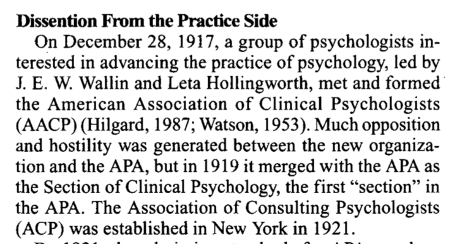
Would you be surprised if Leta Hollingworth was a racist and eugenicist? See here wikipedia page. She was also married to another eugenicist psychologist Harry Levi Hollingworth, who was president of the APA in 1927. You could read Wallin’s eugenics here (Wallin 1914). This split didn’t last long and the APA recouped the AACP, and established the first “section” in the APA. Neato, I didn’t know that.
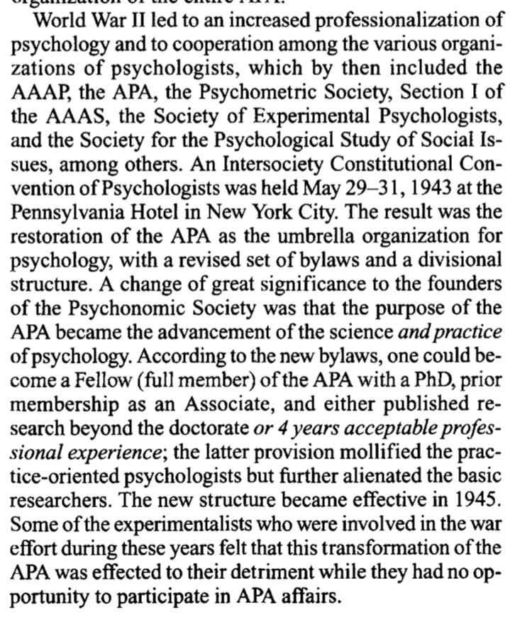
There is an acknowledgement of the role that WW II played in the discipline of psychology. There are many connections between psychologists and war efforts in the US, and without going into that history, let me point out a primary theme is eugenics, and many of the psychologists involved were also members of eugenics societies. We see some mention of some other societies, like SEP (Society of Experimental Psychologists)…notably this exclusive honor club of psychologists still gives the Howard Crosby Warren medal every year. HC Warren was another APA president (1913), and he is listed in the Eugenical News as an active researcher. But, the main point of this paragraph is the italicized two words “and practice”, whereby the new bylaws of the APA included “practice” alongside science, as a way into the APA. It seems like the scientists didn’t like this very much. They didn’t want the science to be watered down. I get that.
We are then treated to a context of previous attempts to make scientific clubs of psychologists, where psychologists could just finally hang out and be scientists with each other.

The experimentalists were notable misogynists, and they grew into the SEP, which maintained its misogynistic roots. I won’t go into the membership of SEP, because this about Psychonomics, and SEP is another day.

Part of the point in this history could be to establish the “long” roots of Psychonomics by tying it to preceding exclusive honor societies. There is much cross-fertilization between the societies, as noted throughout this paper (and even today).
Next, we learn about earlier efforts by Titchener’s group to create scientific space within APA conferences of the 20s.
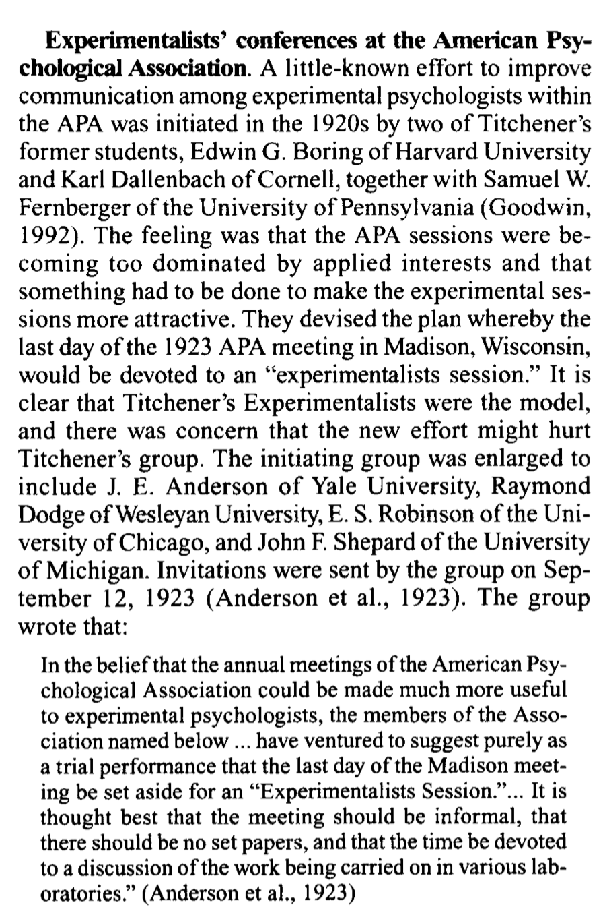
I haven’t found Titchener connect himself with eugenics in his writing, but Boring is certainly eugenics adjacent (having with worked with Yerkes in the army IQ testing effort). Dallenbach and Fernberger I don’t know much about. Dallenbach was on an NRC committee with several other known eugenics proponents. Fernberger wrote a biography for HC Warren, wrote on “the problem of mental disorders”, and seems eugenics adjacent at first glance. J. E. Anderson was APA president in 1943, and wrote “The Modern baby Book and Child Development Record”, which follows in the footsteps of Galton’s eugenics approach. Raymond Dodge was APA president in 1916, did some IQ testing during the war, and supported some eugenics policies, but doesn’t appear to be a major public advocate of eugenics. Haven’t looked into Robinson, but he writes about the great need to apply science to “the problem of public intelligence”. Shepard like many his contemporaries worked in testing of the military during the war.
It seems that this effort of organization didn’t really work, and the group fizzled.
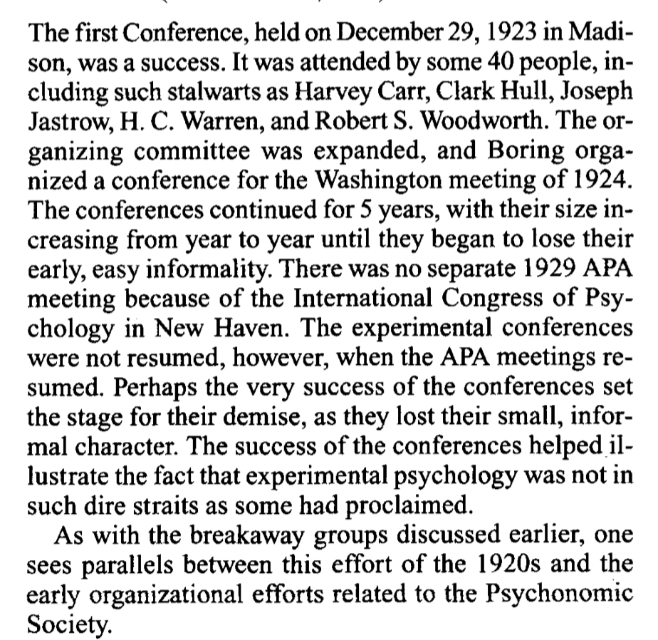
But, it’s interesting that very notable people (“stalwarts”) were in attendance: Harvey Carr, Clark Hull, Joseph Jastrow, H. C. Warren, and Robert S. Woodworth. T. All of these men were deeply into eugenics, and they were also all one-time presidents of the APA see some notes on each here.
Huh, next we learn about another fascinating society in Psychology, the psychological round table, or PRT…If you followed my twitter account last summer, you would know that I tweeted a bunch about them. They are a “well-kept-secret” honor society that still exists today. They have a smelly history of misogyny. They keep their member list close to their chests. Who knows what their members think about eugenics? It’s just one of those questions that has to be asked in a blog post using the lens of eugenics to explore this paper.

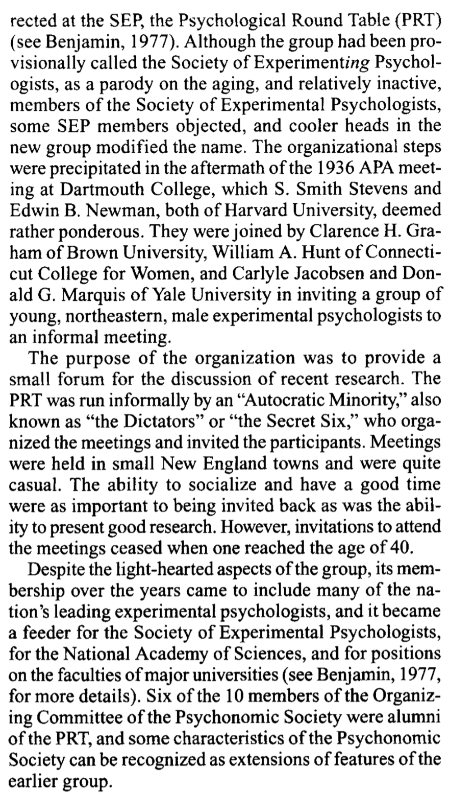
I think the TLDR here is that Psychonomics should be proud that among its founders were esteemed members of PRT. Congrats, give yourself a pat on the back.
PRT had GUV as a sister “secret society”, so ya. Hi GUV friends, wave.
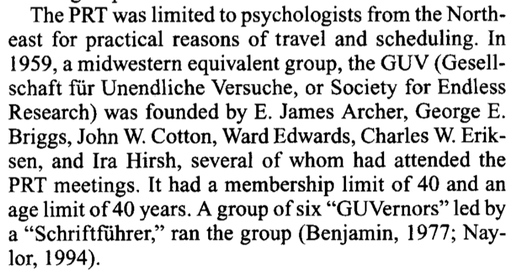
Again we have a list of names of well known psychologists. I’ll point to one small puzzle. I know C. W. Eriksen because he invented the flanker task. I’ve been asking myself, what does that have to do with eugenics? After all, I have used that task on numerous occasions. Well, the puzzle is not about the flanker task. Nope, it is why does C. W. Eriksen appear in a footnote in Kuhl’s (Kühl 2013) book on eugenics? It’s because Eriksen was among several other psychologists (with eugenics connections) who signed a letter supporting Arthur Jensen, who has often been characterized as a racist psychologist.
from Kuhl: “The ten other scholars were Jack A. Adams, Raymond B. Cattell, Francis H. Crick, C. D. Darlington, Charles W. Eriksen, Eric F. Gardner, Quinn McNemar, Eliot Slater, Robert L. Thorndike, Frederick C. Thorne, and Philip E. Vernon; cf. JBA Oxford, G. 14. The activity was at first coordinated by the psychologist Ellis B. Page of the University of Connecticut; cf. Jensen to Dobzhansky, 9/2/1972, THA Philadelphia: Jensen, Arthur R.”
Anyway, let’s continue with the paper.
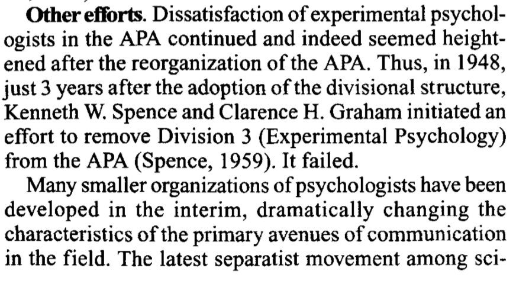
Interesting, I did not know that there was a failed attempt to remove division 3 (exp in psych) from APA in 1948. But, I certainly have learned about big names in Experimental Psychology who were eugenicists, like Thorndike, Watson and Lashley. I haven’t looked at Spence or Graham. For Spence I will just point out that we worked under Yerkes and Hull, so it seems very likely he was exposed to his mentors’ eugenics. It would be interesting to look at Spence’s scholarship from the lens of the eugenics ideology of his mentors. (edit: I do that a bit later).
Alright, we have arrived at the beginning of the Psychonomics Society:
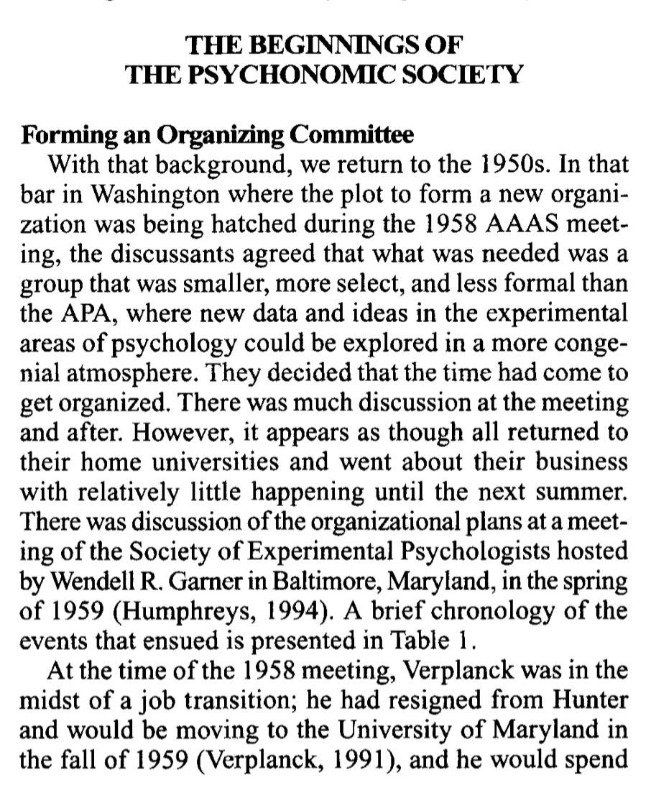
Let’s take a look at the table events:

More names:
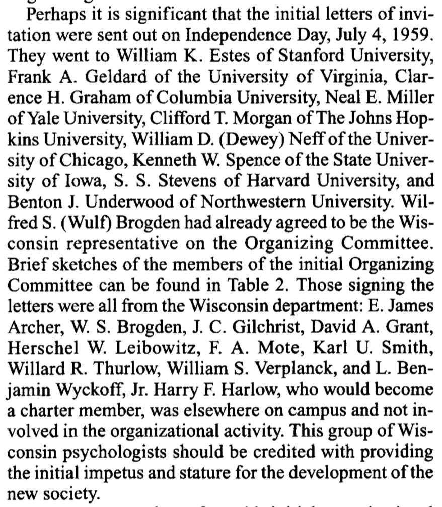
And a table of membership of the organizing committee (from the American Men of Science):

Interesting to note the ages, so many members were all kicked out of PRT and GUV.
More people get involved. I love how “diverse” and “white males” was working into the paragraph.

There was some discussion and dissent about the purposes and directions of the new society. I wonder how much of that discussion had to do with restorative justice for survivors of eugenics at that time. I wasn’t there, maybe it wasn’t on the radar.

Some of the tension in the story appears to be the need to fight for science in psychology, and to make a society that shows everyone why science and psychology is so important. A story like this has been drilled into me over the years. IMO, science shouldn’t be an excuse to do psychology.
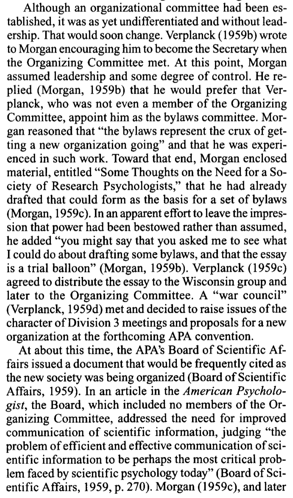
And now, we go back to the bar:
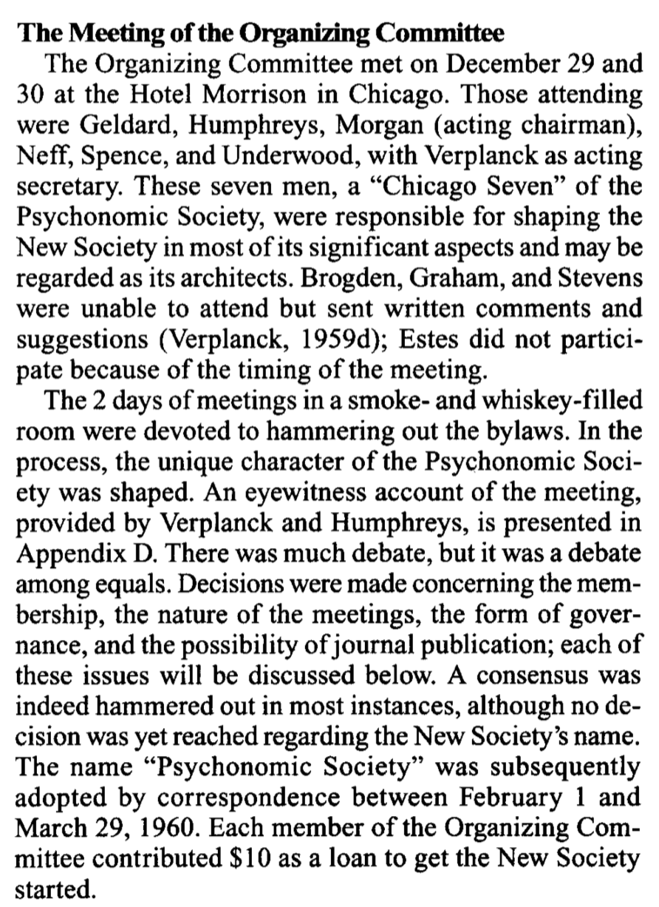
Should I go to Appendix D now, or later…it’s choose your own adventure. Let’s do it, Appendix D says :

For my two cents, the part at the bottom resonates very strongly. It seems there was an elitist contingent from the PRT. Ever wonder why graduate students don’t give talks at Psychonomics? Maybe this is why. The elitists won.
Back to the paper. So, 950 invitations were sent out to potential members, the name Psychonomics was adopted and incorporated in 1960. There is an appendix on the name “Psychonomics”. I’ll get to that later.
“The First Annual Scientific Meeting of the Psychonomic Society The first meeting of the Psychonomic Society was held at the University of Chicago on September 1-3, 1960, just before the 1960 APA meetings. Approximately 294 individuals attended, of whom 195were members, 79 were guests, and approximately 20 were unregistered. The program included 119 papers in 24 sessions arranged in eight time blocks with three concurrent sessions each; four blocks on Thursday, three blocks and an afternoon business meeting on Friday, and one block on Saturday morning. They were grouped into 15 categories. The nature of the experimental psychology ofthe time, at least for the members of the new Psychonomic Society, can be seen in the distribution of papers across sessions; these are presented in Table 3.”
Let’s look at Table 3:
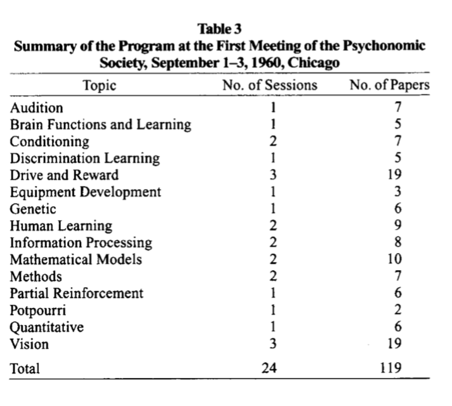
Oh no, it seems that the potpourri session has basically disappeared in terms of modern Psychonomics. Now, should I stay or should I go find the 1960 conference abstracts. I guess I should do that. I’m going to do that now, wish me luck.
No dice yet, couldn’t find the conference abstracts after a quick search. Not sure which archive they are in. In any case, it would be interesting read about the genetics session and a few others.
Well, maybe spoke to soon. I can do things like search “paper presented to the Psychonomic Society, 2 September 1960” in Google scholar, and restrict the dates to 1960. Then a few papers that were read at psychonomics in 1960 come up. A start anyway. Here’s an example, still would be nice to get the full list at some point.
- Jerison, H. J. (1961). Quantitative analysis of evolution of the brain in mammals. Science, 133(3457), 1012-1014.
Alright, some stuff happened at the first conference. We learn that it wasn’t really too much different than division 3 APA conferences. Then there is the first business meeting, a first newsletter, etc.
Some thorns in the side, or additional reasons why Psychonomics needed to be created, it seems APA was making actual presentations of research more difficult. Kind of funny to imagine Estes’ apparatus solution to the problem.
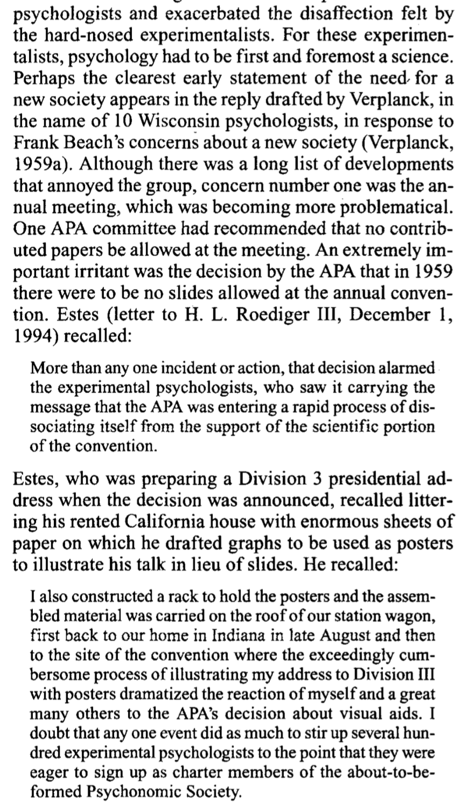
It seems that Psychonomics could be the place where science happened, and still be affiliated with the APA
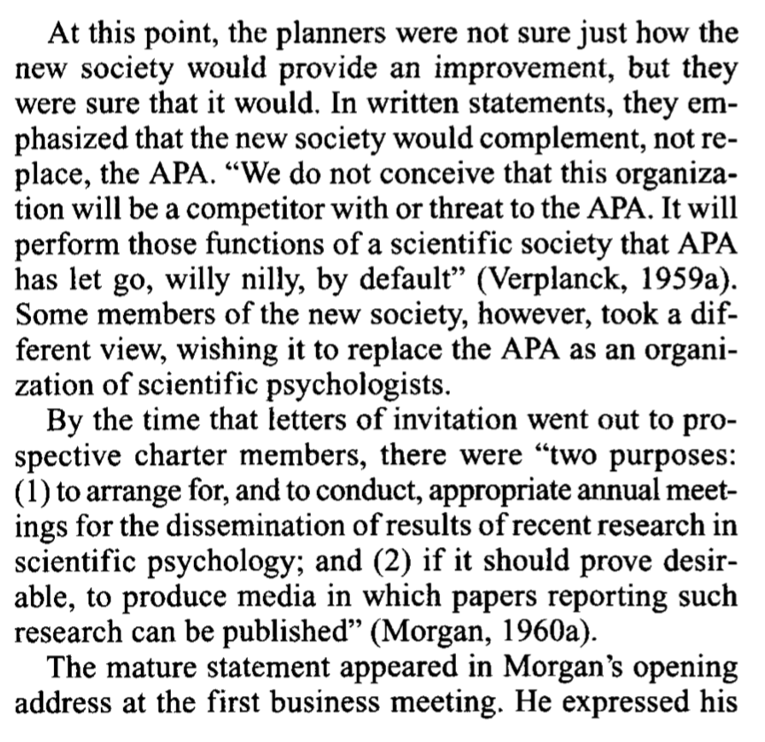
What’s in a name…Also, more in the appendix, which I will get to later. Also, some icky quotes in here…what’s on page 5 !!!
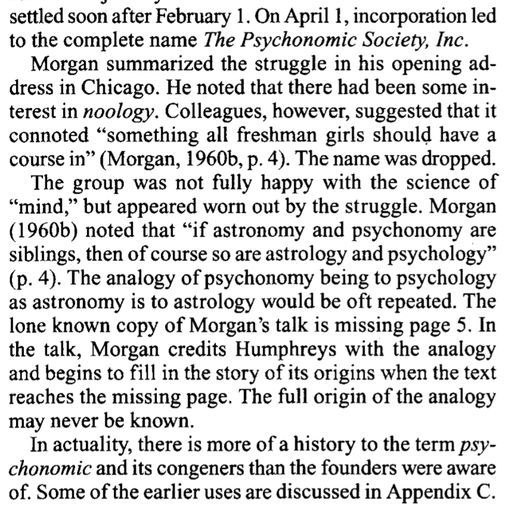
Some membership features:
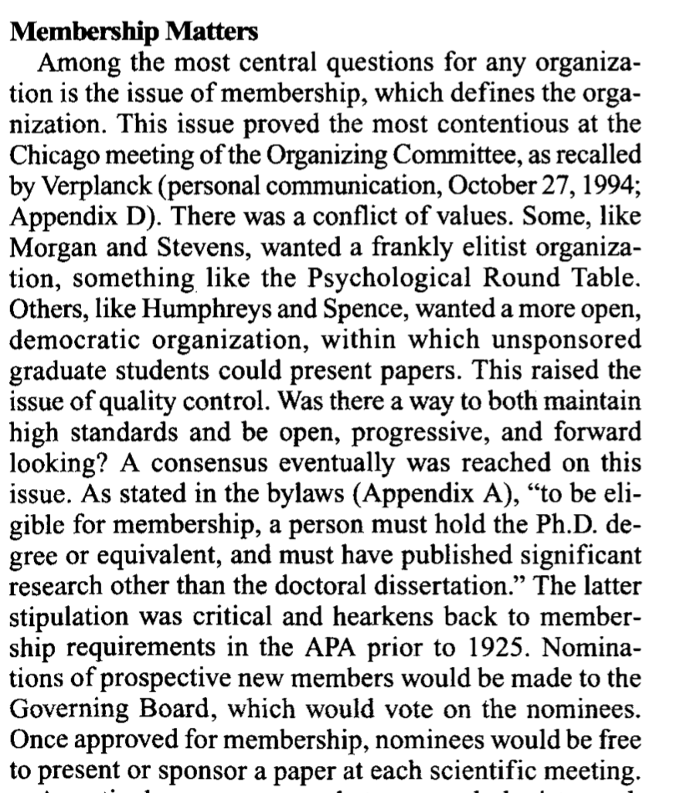
I guess this part went out the window, said the fellow researching the foundations of the fellow-less society he is a fellow of.
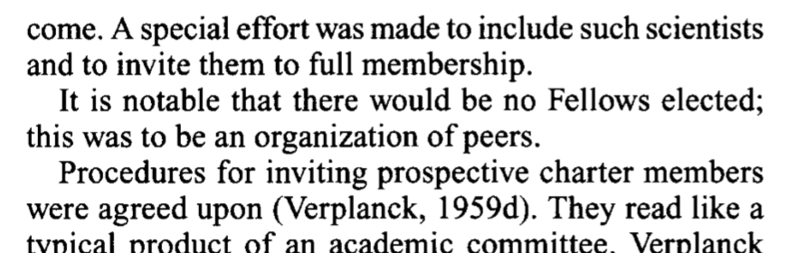
There was a distinct lack of diversity:
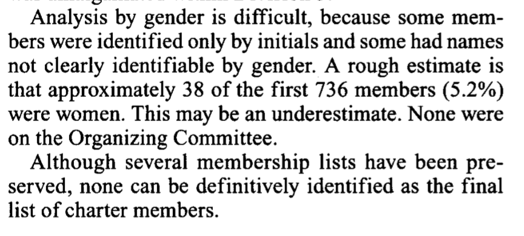
So this is why Psychonomics is just about coffee…keeps the cost of the conference down though (and I very much appreciate that…Also, I should say I very much appreciate Psychonomics, and the only reason I am spending this much time looking into the history of Psychonomics is because of how much I appreciate this society.)
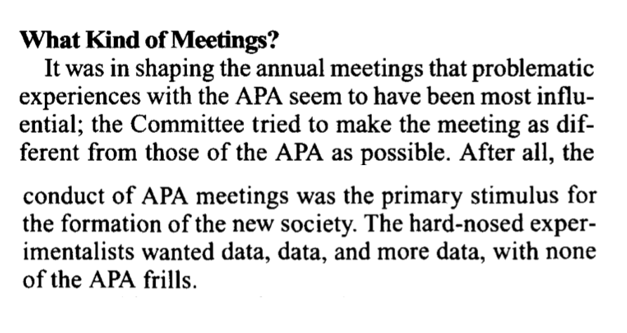
Then some more stuff about restricting papers and talks to members. LET THE GRADUATE STUDENTS GIVE TALKS ALREADY.
Governance structure is supposedly lean and in the style of PRT…not sure if that is good or bad. I’ve never been involved with governance at Psychonomics. Can’t say anything about what it’s like now.
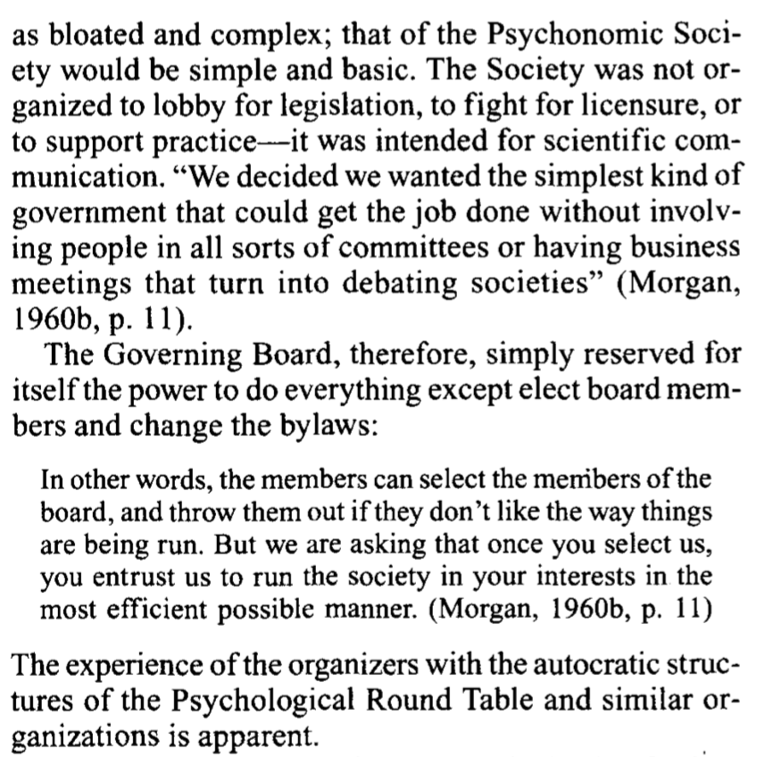
Psychonomics journals didn’t work out right away, but eventually started happening, courtesy of Clifford Morgan.
The concluding paragraph.
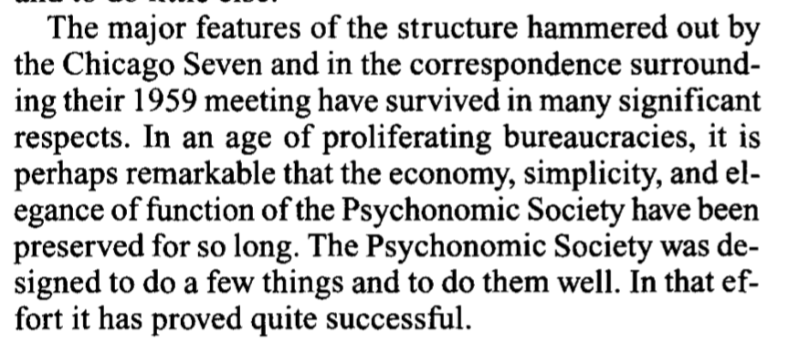
So a simple history of Psychonomics is that it is a lean organization for scientific psychologists to talk about their science. And it is does that very well.
Societies have many members and viewpoints and it’s unclear what kinds of views Psychonomics members have had over time about issues such as eugenics, or about tolerating or not tolerating other members’ views on such issues.
Time for a small break.
Aside from eugenics, I wonder how many folks from the governing board of Psychonomics and say all of the journals are also members of PRT and GUV? I would guess quite a few. If so, there is a “hidden” layer of elitism to the society, and if you are not part of the club…like moi, then I guess sucks to be you (or me as it happens).
Naming Psychonomics
On the naming of Psychonomics from the appendix:

I’ll point out that James Mark Baldwin also wrote, “The mental development in the child and race: methods and processes (Baldwin, 1900)”. And, that curiously the word “flow” is often used in eugenics literature (see chpt 6 of Yakushko (2019a)). These are obviously juxtaposition to eugenics, and I don’t know the eugenics literature well enough yet to know if there are additional connections. Anyway, I thought these connections were worth noting.
The rest of the appendix reads:
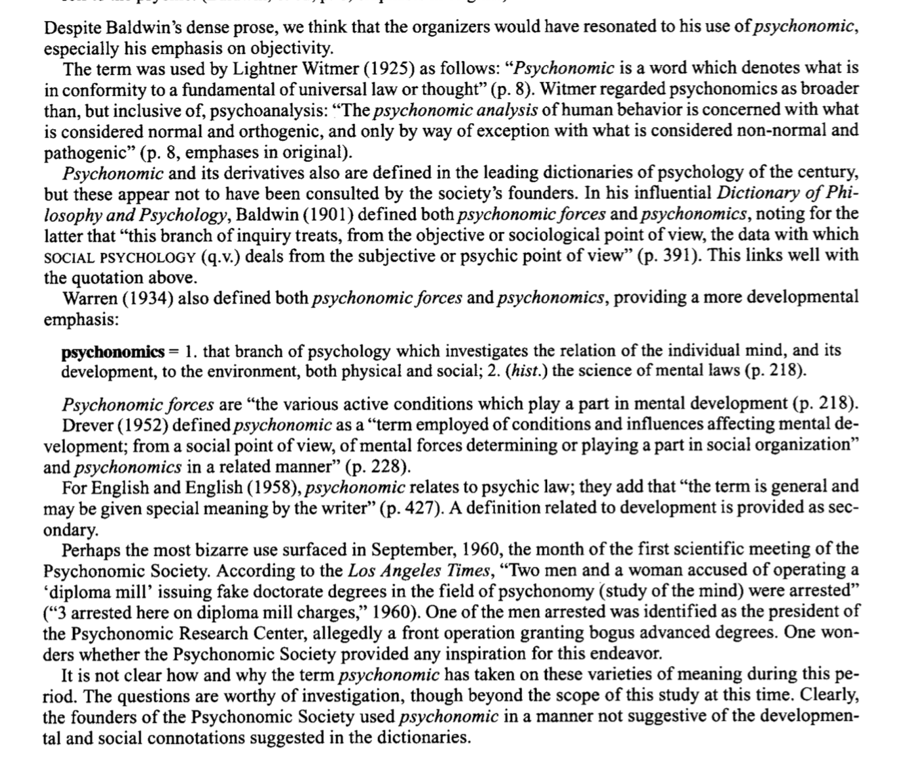
I’ve had a little bit more time to look at “Psychonomic” in the context of eugenics and social darwinism, and I found that it also has a meaning in terms of the “general psychonomic law”. I found this in a footnote from Goodchild (2012) who discusses G. Stanley Hall (one-time APA president and eugenicist)
“Cremin, Transformation of the School, 101–2. Cremin described Hall’s foundational idea exceptionally well. “Hall’s basic thesis—the ‘general psychonomic law,’ which he borrowed from Haeckel and Spencer—was that ontogeny, the development of the indi- vidual organism, recapitulates phylogeny, the evolution of the race.”
I dunno, seems like the general psychonomic law also has a meaning in terms of eugenics writing. Or maybe I’m just reading way too much into this. Here’s Hall in his own words…

Yup, psychonomics is a word that also has meaning in eugenics writing. So, there’s that.
A final thought on this is the historical tradition of harkening back to something of perceived value. Is it possible that in establishing a new society, the founders chose the word “Psychonomics” to harken back to the beginning of the APA, and reference the eugenics writings of the first APA president, G. Stanley Hall? It’s a question that falls out of the eugenic analysis lens.
There are three more papers on the history of Psychonomics on their website, and I’ll read those a little bit later. Some of the next steps that I should take include looking more closely at the scholarship of the organizers. Considering the large amount of eugenics oriented research in the APA up to this time, and considering that Psychonomics was mainly planning to be a society that continued APA division 3 research, it would be surprising if the early days of Psychonomics did not include eugenics oriented research.
At the same time, we are now talking about 1960 and onward, a time in history when it became more unpopular to use the word eugenics (often attributed to widespread public rejection of eugenics following revelations of Nazi war crimes), and to talk openly about promoting eugenics. So, unlike pre 1945 where it was rather easy to line up psychologists who published in psychology and eugenics journals, or otherwise self-identified as being a eugenicist, it seems like more of a challenge to determine whether psychologists in the 60s were involved in eugenics.
Before I start to look more closely at the scholarship of organizing members, I’d like to mention a few points of interest. For myself, I have been wondering about the connections between eugenics and the cognitive revolution. Psychonomics appears right in the same time frame as the cognitive revolution. I have spent many years thinking about cognition, and basically never thought of myself as contributing in anyway to programs of eugenics. I’ve been asking basic questions about basic psychological processes. How is that related to eugenics?
In any case, here are a few tidbits that have started to inform my thinking about the cognitive revolution. First, it is obvious that the history of individual differences psychology is tightly interwoven with eugenics. The development of IQ testing and psychometrics were employed as tools of eugenics many times over in many different venues in society. It was less obvious to me how experimental psychology was involved. One way was that many formative psychologists in experimental psychology were eugenicists, Thorndike, Watson, Lashley, Hull…the list goes on.
At one point I jumped ahead of myself (in terms of going through the APA presidents), and I looked George A. Miller & eugenics. Most of us know Miller for his magic number 7 + or - 2 paper. That paper was also about applying ideas from Claude Shannon’s information theory to information processing limitations in psychology. Well, guess where Claude Shannon did his master’s thesis. At the eugenics record office in Cold Springs Harbor (Long Island New York). This is one of those weird eugenics connections.
It took some googling but eventually I found George Miller explain his version of eugenics in 1967 in Miller (1967). Miller inverts a common fear of morons that eugenicists usually foment about. Eugenicists like H. Goddard (Goddard 1927) exclaim that morons are everywhere, they look like everyone else, but they are morons because of their IQ, and they must be removed from society or else society will collapse. Miller, in his futurism about the year 2000, says the society will become too complex rendering everyone morons, so basically we need to do something about it or else. Miller cryptically talks about when “the day comes that we have the necessary facts to support a realistic eugenics program, such information could be valuable.” Miller doesn’t say who he wishes to eliminate, he’s cryptic. Still, he thanks his buddy R.J. Hernnstein at the beginning, probably for all the chats about eugenics (Hernnstein would later publish “the Bell curve”).
Still, what did this have to do with cognition? Well, Miller also explains how it obvious that information processing capacity needs to be increased in order for society to survive. It’s plain old Intelligence-exalting, fear-mongering, Galtonian eugenics with fancy words. So, there is some ideology between Miller’s magic number. And it apparently has to do with eugenics.
Second, although I still have to confirm this, it appears that Abraham Maslow was deeply into eugenics, but only wrote about it privately, and this was only made generally available to public upon publishing of some of his private notes.
I mention these two examples primarily because it may be difficult to suss out eugenic ideology among psychologists who don’t share their views publicly, but continue nevertheless to conduct science that has eugenic implications. So, it’s a bit of a warning to myself to not get carried away with wondering if someone is really a eugenicist or not. It’s not for me to decide. One of primary aims is to document more clearly the structural eugenics aspects. In other words, I think at some point it will become clear enough that there was a bunch of eugenics going on, and that this shaped our discipline, and if this is true, it is something Psychonomics has to deal with.
Psychonomics Originators
Eugenicists were very good at getting into the APA, especially as APA presidents. They were also very good at sitting as chairmen in US government committees (see the NRC 1919-1933 division of anthropology & Psychology). It would be kind of astounding to me if there was no interest among eugenicists in having a piece of Psychonomics from the very beginning. Let’s take a look.
Also, what follows are personal notes, sometimes interspersed with “maybe” eugenic-adjacent things, sometimes things I’m interested in returning to for other reasons. After all, even though I have an interest in learning about psychology from the lens of eugenics, this is likewise an opportunity for me to learn about people I didn’t know about before.
Wendell R. Garner
- Had a meeting following SEP that was important for starting up Psychonomics
- Sidenote, I always enjoyed reading Garner’s ideas, especially inferred subsets.
- Garner was the James Rowland Angell Professor of Psychology at Yale, Angell of course was a eugenicist, so even if Garner wasn’t he had to deal with this association. This is a pattern of structural eugenics.
- Garner WR, Wigdor AK, editors. National Research Council, Committee on Ability Testing. Ability testing: Uses, consequences, and controversies. Washington, DC: National Academy Press; 1982. (and part II)
- Chapanis, A., Garner, W. R., Morgan, C. T., & Sanford, F. H. (1947). Lectures on men and machines. An introduction to human engineering. JOHNS HOPKINS UNIV BALTIMORE MD.
- read the part on personnel selection
- if you read Garner without thinking about the context of eugenics, you might think he was just doing basic sensory psychology with a bit statistical uncertainty thrown in, and some apparent interest in rating scales…
- and stuff like this pops up: Chauncey, H., Wigdor, A. K., & Garner, W. R. (1958). How tests help us identify the academically talented. NEA Journal, 47, 230-31.
- looks interesting: Garner, W. R. (1959). Applications of Information Theory to Psychology. The Journal of Nervous and Mental Disease, 129(5), 501.
- Another connection: Miller, G. A., & Garner, W. R. (1948). Masking by Interrupted Random Noise. The Journal of the Acoustical Society of America, 20(4), 593-593.
William S. Verplanck
- on the organizing committee
- involved in military testing
- Graham, C. H., Riggs, L. A., Bartlett, N. R., Berry, R. N., & Verplanck, W. S. (1943). A report of research on selection tests at the US Submarine base, New London.
- Verplanck, W. S. (1955). The control of the content of conversation: reinforcement of statements of opinion. The Journal of Abnormal and Social Psychology, 51(3), 668.
- Verplanck, W. S. (1957). A glossary of some terms used in the objective science of behavior. Psychological review, 64(6p2), 1.
- I think he was a radical behaviorist maybe
- Verplanck, W. S., & Eriksen, C. W. (1962). Behavior and awareness.
- Verplanck, W. S. (1970). An “overstatement” on psychological research: What is a dissertation?. The Psychological Record, 20(1), 119-122.
- Verplanck, W. S. (1970). Trainers, trainees, and ethics. The Counseling Psychologist, 2(2), 71-75.
- Verplanck, W. S. (1996). From 1924 to 1996 and into the future: Operation analytic behaviorism. Mexican Journal of Behavior Analysis, Monographic issue, 22, 19-60.
- Verplanckk apparently published works with strong titles
- Verplanck, W. S. (1971). Further overstatements of a phenomenological behaviorist. The Psychological Record, 21(4), 481-486.
- Verplanck, W. S. (1962). Bravo to the Brelands!.
Wilfred J. Brogden
- organizing committee member
- Neurotree shows connections back to Pavlov and Angell (through Elmer Culler)
- Brogden, W. J. (1947). Sensory preconditioning of human subjects. Journal of experimental psychology, 37(6), 527.
- Worked with GA Miller, Brogden, W. J., & Miller, G. A. (1947). Physiological noise generated under earphone cushions. The Journal of the Acoustical Society of America, 19(4), 620-623.
- did lots empirical work
- Brogden, W. J. (1951). Some theoretical considerations of learning. Psychological review, 58(3), 224.
- reviews Hull here, Brogden, W. J. (1944). Review of Principles of behavior.
- I wonder what he says here: Simpson, G. E., Brogden, W. J., & Lehner, G. F. (1950). Man’s Essential Nature.(Book Reviews: On Being Human; Organization of Behavior). SciMo, 71(4), 284-285.
- Brogden, W. J. (1954). Book Reviews: The Making of a Scientist. SciMo, 78(4), 260.
- Grant, D. A. (1976). Wilfred John Brogden: 1912-1973.
- Any relation to Brogden (one time president of psychometrics society?)
William K. Estes
- organizing member
- Estes is near and dear to much of my computational work in learning and memory
- Worked with Skinner (not sure about Skinner and eugenics, but see Walden two for a vision of his Utopian society)
- Estes, W. K. (1944). An experimental study of punishment. Psychological Monographs, 57(3), i.
- Estes, W. K. (1960). Learning theory and the new” mental chemistry.”. Psychological Review, 67(4), 207. (strange that this paper appears on https://hanseysenck.com under 1963)
- Estes, W. K., Koch, S., MacCorquodale, K., Meehl, P. E., Mueller Jr, C. G., Schoenfeld, W. N., & Verplanck, W. S. (1954). Modern learning theory: A critical analysis of five examples.
- Estes, W. K. (1957). Of models and men. American Psychologist, 12(10), 609.
- Estes, W. K., & Estes, K. W. (1944). Minnesota studies in war psychology: I. A set of miniature scales for the measurement of attitudes related to morale. The Journal of Social Psychology, 20(2), 265-276.
- I didn’t know that Estes wrote a bunch on intelligence. I wonder what his perspective was?
- Estes, W. K. (1974). Learning theory and intelligence. American Psychologist, 29(10), 740.
- Estes, W. K. (1981). Intelligence and learning. In Intelligence and learning (pp. 3-23). Springer, Boston, MA.
- Estes, W. K. (1982). Learning, memory, and intelligence. Handbook of human intelligence, 170-224.
- Estes, W. K. (1976). Intelligence and cognitive psychology. The nature of intelligence, 295-306.
- Estes, W. K. (1992). Postscript on ability tests, testing, and public policy. Psychological Science, 3(5), 278-278.
- Aa, this is where Estes defends Jensen (vehicles of g), and IQ testing, and says it needs to go on unhindered in the name of science for the benefit of humanity, even if some people don’t like it…also a call for ethics that let’s scientists do what they want, but also somehow protects everyone…
- Estes, W. K., & Learning, M. (1986). Where is intelligence. What is intelligence, 63-67.
- Estes, W. K. (2012). The Research Traditions of Intelligence and Learning Theory. Intelligence and Learning, 14, 3.
Frank A. Geldard
- organizing committee
- From 1959 to 1965, he was chairman of the NATO Advisory Group on Human Factors, a subcommittee of the NATO Science Committee. In that capacity, he edited ‘’Defense Psychology,’’ the proceedings of a 1960 Paris symposium held by the advisory group.
- some neat work on cuteanous communication
- Geldard, F. A., & Harris, C. W. (1946). Selection and classification of aircrew by the Japanese. American Psychologist, 1(6), 205.
- Geldard, F. A. (1953). Military psychology: Science or technology?. The American journal of psychology, 66(3), 335-348.
- Geldard, F. A. (1957). The first international symposium on military psychology. American Psychologist, 12(12), 737.
- GELDARD, F. A. (1942). Explanation in science. American Scientist, 30(3), 202-211.
- Geldard, F. A. (1980). Clark and the psychology of the “schools”. Journal of the History of the Behavioral Sciences, 16(3), 225-227.
- Geldard, F. A. (1961). A NATO symposium on defense psychology. American Psychologist, 16(6), 320.
- Geldard, F. A. The Uses of Talent. Chicago
- Geldard, F. A. (1932). HIRSCH, NDM, Twins: Heredity and Environment (Book Review). American Journal of Psychology, 44, 210.
- Geldard, F. A., & Crockett, W. B. (1930). The binocular acuity
relation as a function of age. The Pedagogical Seminary and Journal of
Genetic Psychology, 37(1), 139-145.
- This is one is very eugenics oriented
- Geldard, F. A. (1933). JOHN A. LARSON, in collaboration with GEORGE W. HANEY and LEONARDE KEELER. Lying and Its Detection. A Study of Deception and Deception Tests (Book Review). The Journal of Genetic Psychology, 42, 499-500.
Clarence H. (Clancy) Graham
- Successor to Woodworth at Columbia
- Graham, C. H., & Ratoosh, P. (1962). Notes on some interrelations of sensory psychology, perception, and behavior. Psychology: A study of a science, 4, 483-514.
- Graham, C. H., & Ratoosh, P. (1962). Notes on some interrelations of sensory psychology, perception, and behavior. Psychology: A study of a science, 4, 483-514.
- found this, not a Graham paper, but a weird one for psychophysics Pollack, R. H., Ptashne, R. I., & Carter, D. J. (1969). The effects of age and intelligence on the dark-interval threshold. Perception & Psychophysics, 6(1), 50-52.
- Graham, C. H., & Nafe, J. P. (1930). Human intensity discrimination with the Watson-Yerkes apparatus. The Pedagogical Seminary and Journal of Genetic Psychology, 37(2), 220-231.
- Worked closely with WS Hunter for a bit
- bio and pub list: “Clarence H. Graham Edgar D. Tillyer Medalist for 1963,” J. Opt. Soc. Am. 53, 1015-1018 (1963)
Lloyd G. Humphreys
- IQ tester
- accepted money from Pioneer Fund
- from Wikipedia: In the 1970s, Humphreys chaired the American Psychological Association’s Task Force on ability and achievement testing. He deemed a general intelligence test “the single most important test that can be administered for vocational guidance purposes” (Humphreys, 1985, p. 211). He also coined the concept “inadequate learning syndrome” (ILS) and argued it was a more important social problem than the AIDS epidemic (Humphreys, 1988).
- Amid the controversy generated by publication of The Bell Curve in 1994, Humphreys wrote a target article (Humphreys, 1994), which stimulated a series of comments by a number of prominent scholars in the field. He generated further controversy by accepting funding from the Pioneer Fund. He was also one of 52 signatories on “Mainstream Science on Intelligence,[3]” an editorial written by Linda Gottfredson and published in the Wall Street Journal, which defended the findings on intelligence in The Bell Curve.
- Humphreys, L. G., & Ill, C. (1989). Intelligence: Measurement, theory, and public policy: Proceedings of a symposium in honor of Lloyd G. Humphreys. University of Illinois Press.
- Humphreys, L. G., Davey, T. C., & Park, R. K. (1985). Longitudinal correlation analysis of standing height and intelligence. Child Development, 1465-1478.
- Humphreys, L. G., & Stark, S. (2002). General intelligence: Measurement, correlates, and interpretations of the cultural-genetic construct. In The General Factor of Intelligence (pp. 99-128). Psychology Press.
- Humphreys, L. G., & Cancro, R. (1971). Intelligence: Genetic and environmental influences.
- Humphreys, L. G. (1991). Limited vision in the social sciences. The American journal of psychology, 333-353.
- Humphreys, L. G. (1985). Race differences and the Spearman hypothesis. Intelligence, 9(3), 275-283.
- There’s lots of where this came from
Clifford T. Morgan
- From Wikipedia: Clifford Thomas Morgan (July 21, 1915 – February 12, 1976)[1] was an American psychologist whose research was in the fields of physiological and experimental psychology. He was the author of the 1943 textbook Physiological Psychology, as well as a co-founder of the Psychonomic Society in 1959, of which he served as the first chairman.[2][3] He also established three academic journals from 1964 to 1966: Psychonomic Science, Psychonomic Monograph Supplements, and Perception & Psychophysics. He went on to give these journals to the Psychonomic Society in 1967.[4] In his honor, the Society for Behavioral Neuroscience and Comparative Psychology, Division 6 of the American Psychological Association, awards the Clifford T. Morgan Distinguished Service to Div. 6 Award.[5]
- Notable student was John Zubek!
- Beach, F. A., Hebb, D. O., Morgan, C. T., & Nissen, H. W. (1960). The neuropsychology of Lashley.
- Morgan, C. T., Stellar, E. L. I. O. T., & Johnson, O. L. A. F. (1943). Food-deprivation and hoarding in rats. Journal of Comparative Psychology, 35(3), 275.
- Chapanis, A., Garner, W. R., Morgan, C. T., & Sanford, F. H. (1947). Lectures on men and machines. An introduction to human engineering. JOHNS HOPKINS UNIV BALTIMORE MD.
- read the part on personnel selection
- Morgan, C. T. (1947). Human engineering.
- What does this committee report say? BUGENTAL, J., CLARK, K., EBERHART, J., ERICKSEN, S., HARPER, R., HUMPHREYS, L., … & ROGERS, C. (1965). COMMITTEE ON THE SCIENTIFIC AND PROFESSIONAL AIMS OF PSYCHOLOGY-PRELIMINARY-REPORT.
- MORGAN, C. T., FLEISHMAN, E. A., & MUELLER, C. G. (1959). Human Performance Capabilities and Limitations. SMITH ELECTRONICS INC CLEVELAND OH.
- Likert, R., & Morgan, C. T. (1953). Report of the APA representatives to the AAAS Council. American Psychologist, 8(11), 698.
- Barnett, S. A., Barnett, S. A., Barnett, S. A., Abercrombie, M., Adolph, E. F., Adolph, E. F., … & Tiegs, O. W. (1963). Effects of ’free-environment’rearing upon exploratory behavior. In The Rat: A Study in Behavior (Vol. 151, pp. 1-14). Paris: Kegan Paul.
- Behavior Genetic Analysis series: John F. Dashiell was Consulting Editor of this series from its inception in 1931 until January 1, 1950. Clifford T. Morgan was Consulting Editor of this series from January 1, 1950 until January 1, 1959. Editor from 1959 to 1965. In 1965 a Board of Consulting according to areas of interest. The experimental psychology), Norman board members are Harry F. Harlow (physiological, Garmezy (abnormal, clinical), Harold W. Stevenson (child, adolescent, human development), and Lyle V. Jones (statistical, quantitative).
- 1 Clifford T. Morgan, Physiological Psychology (3rd ed., New York i965), 307. Indeed, certain kinds of environmental “programming” are absolutely essential if the human organism is to develop normally. Without a “normal sensory environment,” some neural structures will not develop or will tend to degenerate from disuse.
- Appears in PRELIMINARY STUDY OF SOCIAL PSYCHOLOGICAL FACTORS IN AMERICAN PSYCHOLOGICAL LEADERSHIP 1892 - 1952 Dissertation of James Harry Ritter, B.S., M.S. (quite the read)
- PRT member, likely misogynist based on his exclusion of women in graduate programs he ran (see Capshew (1999))
William D. (Dewey) Neff
- https://www.chicagotribune.com/news/ct-xpm-2002-05-15-0205150240-story.html
- Neurotree is a straight line: Neff - Culler - Carr - Angell
- did lots of sensory work
- Neff, W. D., & Goldberg, J. M. (1960). Higher functions of the central nervous system. Annual review of physiology, 22(1), 499-524.
- Cronbach, L. J., & Neff, W. D. (1949). Selection and training.
- Neff, W. D., & Diamond, I. T. (1958). In (HF Harlow and CN Woolsey, Eds.) Biological and Biochemical Basis of Behavior.
- SEP member
- Neff, W. D. (1942). Memorandum on the use of audiograms in the selection of operators.
- Neff, W. D. (1936). The Measurement of Attitude (Doctoral dissertation, University of Illinois at Urbana-Champaign).
- Neff, W. (1964). Temporal pattern discrimination in lower animals and its relation to language perception in man. Disorders of language, 183-199.
Kenneth W. Spence
- worked with Yerkes and Hull, two psychologists deeply committed to eugenics ideology
- Spence, K. W. (1937). Experimental studies of learning and the higher mental processes in infra-human primates. Psychological Bulletin, 34(10), 806.
- Yerkes, R. M. (1935). A second-generation captive-born chimpanzee. Science, 81(2109), 542-543.
- did a lot primate work early on
- Spence, K. W. (1934). Visual acuity and its relation to brightness in chimpanzee and man. Journal of Comparative Psychology, 18(3), 333.
- Spence, K. W., & Townsend, S. (1930). A comparative study of groups of high and low intelligence in learning a maze. The Journal of General Psychology, 3(1), 113-130.
- sounds interesting: David B. Baker (Director, Archives of the History of American Psychology, University of Akron) - “So You Want to be a Psycologist[sic]” University of Iowa student film from the 1950s featuring Kenneth Spence and other Iowa faculty
- Hull-Spence Behavior Theory and Mental Deficiency, from HANDBOOK OF MENTAL DEFICIENCY, Harlow, Cantor, G. N. (1963). Hull-Spence behavior theory and mental deficiency. Handbook of mental deficiency, 90-133.
- Spence, J. T., & Spence, K. W. (1966). The motivational components of manifest anxiety: Drive and drive stimuli. Anxiety and behavior, 291326.
- Box 2 Folder 62 Dr. Kenneth Spence on Dr. Seashore and Dugald C. Jackson 1958 1958 https://rmc.library.cornell.edu/EAD/htmldocs/KCL06012.html
S. Smith (Smitty) Stevens
- development of operational definitions
- interest in human variety, like Galton
- Sheldon, W. H., Stevens, S. S., & Tucker, W. B. (1940). The varieties of human physique.
- Sheldon, W. H., & Stevens, S. S. (1942). The varieties of temperament; a psychology of constitutional differences.
- Stevens, S. S. (1935). The operational definition of psychological concepts. Psychological Review, 42(6), 517.
- Stevens, S. S. (1939). Psychology and the science of science. Psychological bulletin, 36(4), 221.
- Stevens, S. S. (1936). Psychology: The propaedeutic science. Philosophy of Science, 3(1), 90-103.
- Beebe-Center, J. G., & Stevens, S. S. (1937). Cardiac acceleration in emotional situations. Journal of Experimental Psychology, 21(1), 72.
- Reese, T. W., Kryter, K. D., & Stevens, S. S. (1944). The relative annoyance produced by various bands of noise. Report No. PB, 27306, 1944.
- Stevens, S. S. (1946). Machines cannot fight alone. American Scientist, 34(3), 389-400.
- Stevens, S. S., & Boring, E. G. (1947). The new Harvard psychological laboratories. American Psychologist, 2(7), 239.
- Miller, G. A., Wiener, F. M., & Stevens, S. S. (1946). Combat instrumentation. II. Transmission and reception of sounds under combat conditions. Summary Technical Report of NDRC Division 17.3. NDRC (government): Washington, DC.
- Stevens, S. S., & Beranek, L. L. (1942). Word lists for articulation testing. Psycho-Acoustic Lab (No. 1C-26). Harvard University Report.
- What’s this about: Stevens, S. S. (1939). Psychology and the GENETICS OF SPECIFIC COGNITIVE ABILITIES 207 havior Genetics, ed. AR Kaplan. Springfield: Thomas.
- The Varieties of Human Physique: An Introduction to Constitutional Psychology by W. H. Sheldon with the collaboration of S. S. Stevens and W. B. Tucker (1940)
- Handy, E. C., & Handy, E. G. (1943). Personality, Family and History. The Virginia Magazine of History and Biography, 55-70.
Benton J. Underwood
- in a neurotree of mentors
- Underwood, B. J. (1952). An orientation for research on thinking. Psychological Review, 59(3), 209.
- lots of verbal learning and memory work
- Underwood, B. J. (1941). The effects of punishment in serial verbal learning. In Proceedings of the Iowa Academy of Science (Vol. 48, No. 1, pp. 349-352).
- Seashore, R. H., Underwood, B. J., Houston, R., & Berks, L. (1949). The influence of knowledge of results on performance. UNDERWOOD, BJ, Experimental Psychology. New York: Appleton-Century-Crofts.
Frank A. Beach
- Beach, F. A. (1955). The descent of instinct. Psychological Review, 62(6), 401.
- Beach, F. A., & Holz-Tucker, A. M. (1949). Effects of different concentrations of androgen upon sexual behavior in castrated male rats. Journal of Comparative and Physiological Psychology, 42(6), 433.
- Beach, F. A., & Holz, A. M. (1946). Mating behavior in male rats castrated at various ages and injected with androgen. Journal of experimental zoology, 101(1), 91-142.
- Beach, F. A. (1948). Sexual behavior in animals and man. Harvey Lectures, 43, 254-278.
- worked with lashley
- Beach, F. A. (1938). Beach music test. Bureau of Educational Measurements, Kansas State Teaching College…different beach?
- Beach, F. A. (1939). The neural basis of innate behavior. III. Comparison of.
- Beach, F. A. (1947). Brains and the beast. Natural History, 53, 272-275.
- BEACH, F., & CARMICHAEL, L. (1947). Symposium on heredity and environment. Psychological review, 54(6), 297.
- Beach, F. A. (1941). Instinct and intelligence. Transactions of the New York Academy of Sciences.
Donald B. Lindsley
- Lindsley, D. B. (1939). A longitudinal study of the occipital alpha rhythm in normal children: frequency and amplitude standards. The Pedagogical Seminary and Journal of Genetic Psychology, 55(1), 197-213.
- Lindsley, D. B., & CUTTS, K. K. (1940). Electroencephalograms of constitutionally inferior and behavior problem children: comparison with those of normal children and adults. Archives of Neurology & Psychiatry, 44(6), 1199-1212.
- Lindsley, D. B., & Henry, C. E. (1942). The effect of drugs on behavior and the electroencephalograms of children with behavior disorders. Psychosomatic Medicine.
- Travis, L. E., & Lindsley, D. B. (1933). An action current study of handedness in relation to stuttering. Journal of Experimental Psychology, 16(2), 258.
- Schirmann (2014)
Roger B. Loucks
- Loucks, R. B. (1944). An evaluation of various psychological performance tests for altitude chamber research. USAF Sch. Aviat. Med. Proj. Rep.
- Loucks, R. B. (1937). Reflexology and the psychobiological approach. Psychological Review, 44(4), 320.
- Gantt, W. H. (1936). An experimental approach to psychiatry. American Journal of Psychiatry, 92(5), 1007-1021.
Carl Pfaffmann
- lots of smell research
- Pfaffmann, C., & Schlosberg, H. (1936). The conditioned knee jerk in psychotic and normal individuals. The Journal of Psychology: Interdisciplinary and Applied.
Temporary side-note. At some point go through SEP membership. Many of the early members (from Boring’s paper) were also on Eugenics councils.
The American Journal of Psychology publishes SEP notes
e.g., Neff, W. D. (1957). Fifty-Third Annual Meeting of the Society of Experimental Psychologists. American Journal of Psychology, 70(2), 320.
Psychonomic Journals
The second paper on the history of Psychonomics discusses the journals and issues around publishing them. Some interesting stories about the publishing side of things. (Dewsbury 1996)
Psychonomic Science
Running out of steam a bit. I’ve perused a bit through the journal Psychonomic Science, which runs from 1964 to 1972. There are a smattering of papers that are eugenics adjacent IMO, but it mostly seems like fairly standard Psychonomics fare. It’s really great most of these papers are open access, I love this about Psychonomics. The journal also publishes some of the abstracts from Psychonomics conferences. I took a quick look at a few of them, and didn’t see any more papers with eugenics in the title like this Cleland, Swartz, and McGavern (1979), which seems like a rarity. Also, the word “eugenic” and “eugenics” return no results from the journal.
Psychonomic Monograph Supplements
For whatever reason I didn’t have an easy time searching the table of context of Psychonomic monograph supplements. It seems that Springer does not index this one?
Bulletin of the Psychonomic Society
1973-1993
Interesting new concept that members are their own editors, so they can publish things and take responsibility for them. I think this means no peer review (see Morgan’s editorial in first issue). This is the journal that published the one positive eugenics paper mentioned earlier. One other paper used the word eugenics when they references an article from a eugenics journal.
There are several papers returned by genetics, lots of intelligence papers, and some race-based papers. There’s 20 years of publications, and that’s a whole of reading, maybe some other time.
Oops, spoke to soon. Gray (1983) is a very real eugenics treat in 1983, straight out of Galton’s playbook. Wow. Maybe peer-review is a good idea after all?
Perception and Psychophysics (now APP)
A search of “eugenic” returns no results, and “eugenics” returns 5 papers involving references to papers eugenics journals.
Psychobiology
Neat, I didn’t even know this journal existed. It’s on the list of retired journals.
No articles are returned when searching ‘eugenic’ or ‘eugenics’. Certainly no shortage of interesting papers.
I searched “Galton” and found these two papers that I had never come across before.
Burton, P. G. (1990). A search for explanation of the brain and learning: Elements of the psychonomic interface between psychology and neurophysiology I. A cognitive approach to early learning. Psychobiology, 18(2), 119-161.
Burton, P. G. (1990). A search for explanation of the brain and learning: Elements of the psychonomic interface between psychology and neurophysiology II. Early behavior and its control, the origin of consciousness, and the rise of symbolic thought. Psychobiology, 18(2), 162-194.
These are pretty interesting cybernetics inspired papers. Neat that “psychonomic” is used as a process (see naming Psychonomics section). The author also has patent that seeks to provide an objective measure of individual differences in cognitive processing https://patentimages.storage.googleapis.com/fe/d7/5a/421ac1821dd66d/US20080039698A1.pdf. If I wasn’t using a eugenics lens here I would normally say, oh neat, a thoughtful theory and a useful new tool. But, I could also see value in having work like this contextualized with respect to the history of eugenics in psychology and society.
Psychonomic Bulletin and Review
Two papers show up in a search for “eugenics”, that reference papers in eugenics journals. One of them is slightly on the eugenics nose in how it references and uses RA Fishers ideas (not about statistics).
There is this paper:
Rushton, J. P., & Ankney, C. D. (1996). Brain size and cognitive ability: Correlations with age, sex, social class, and race. Psychonomic Bulletin & Review, 3(1), 21-36.
Behavior Research Methods
6 papers returned searching “eugenics”, all occurring in citations, mostly RA Fisher stats stuff.
This is an interesting paper to pluck out:
Davenport, J. W., Benson, R. W., Hagquist, W. W., Rankin, G. R., & Shelton, S. E. (1972). Computerized animal intelligence testing. Behavior Research Methods & Instrumentation.
I bet Tolman would have loved to have this automated contraption when he attempted to breed rats for maze learning ability.
Tolman, E. C. (1924). The Inheritance of Maze-Learning Ability in Rats. Journal of Comparative Psychology, 4(1), 1.
Cognitive, Affective, & Behavioral Neuroscience
No results returned searching “eugenic” or “eugenics”
Cognitive Research: Principles and Implications
This is a new journal, and in general I think use-based cognitive research is pretty great, so there is much to like about this journal. I haven’t submitted anything here, but I do some work on cognitive technologies, such as with the semantic librarian project.
The words “eugenic” and “eugenics” don’t appear yet in this journal. It’s a new journal and probably many researchers, like me only a couple weeks ago, aren’t thinking about eugenics everyday or at all. I could imagine the story of eugenics in psychology as it relates to “use-based” practices of “psychological research” being relevant to guiding modern discussion of applied cognitive research.
Interim question: Why doesn’t the word eugenics appear more often in Psychonomics journals?
I’m not wondering about the absence of papers that explicitly advocate in favor of eugenics (it is still pretty wierd that there are papers like this in the Psychonomic record). I’m wondering about the distinct lack of discussion and contextualization of reseach in terms of eugenics. For example, there doesn’t appear to be a paper that examines historical and contemporary research aims and methods in Psychonomics from the lens of eugenics. Maybe, I’m just motivating myself to fill a gap in the literature.
For example, there are numerous papers about “intelligence”. And, even though that area has extensive connections to eugenics, and remains a controversial area, it doesn’t appear that these issues are discussed directly in papers that use the word intelligence. (I’m inferring this by the fact that searching “intelligence AND eugenics” returns zero results).
Random stuff
I would never recommend reading the journal “Mankind Quarterly”. However, it is interesting to read one author’s perspective on the founding of Psychonomics, in the paper title “Raymond B Cattell and the Fourth Inquisition”, by W Glade. Basically, Cattell is a racist and the APA declines to give him an award even though he showed up to receive it. Anyway, it’s a head spinning dose of WTF. Nevertheless, the claim is that Psychonomics scientists were tired of this kind of “leftist” crap, and left APA because it was getting too “political”.
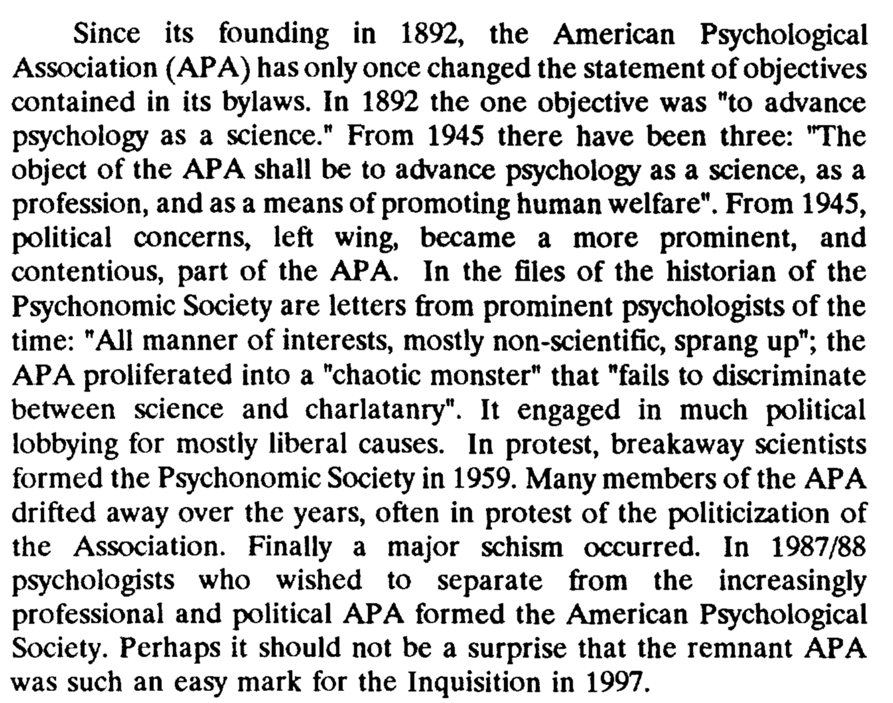
This article from Rushton (a notable racist) suggest that the Pioneer Fund (notorious funder of racist science) has funded a past Psychonomics president (chair I assume). - https://philipperushton.net/wp-content/uploads/2015/02/The-Pioneer-Fund-and-the-Scientific-Study-of-Human-Differences-2002-by-John-Philippe-Rushton.pdf
-
These pieces are not about psychonomics, but I came across them in current efforts so am placing them here. They are reviews by R Held and GA Miller.
- Reviewed Work(s): Group Processes: Transactions of the First Conference by Bertram Schaffner Review by: Richard Held, The American Journal of Psychology, Vol. 69, No. 4 (Dec., 1956), pp. 690-692
- Reviewed Work(s): Cybernetics: Circular Causal and Feedback Mechanisms in Biological and Social Systems, Transactions of the Eighth Conference by Heinz von Foerster, Margaret Mead and Hans Lukas Teuber, Review by: George A. Miller, The American Journal of Psychology, Vol. 66, No. 4 (Oct., 1953), pp. 661-663
What is interesting about these reviews is that both authors illustrate how to talk elliptically or cryptically about ideas that loom over the discipline. Both reviews are about conference books/proceedings, and both authors use subtext and allusion to reference ideologies that appear to loom large at the conferences. Could be fun to read the book review sections of AJP! More broadly, this time period is very different from the earlier decades in terms of open discussion of the subtext. For example, in decades prior some eugenicists published their views in eugenics journals and their methods in psychology journals. That kind of parallelism of ideology and method isn’t very common anymore, making dot connection more difficult.
Related Socities
SEP (Society of Experimental Psychologists)
SEP is a long-standing honorary society in Psychology. Many towering figures in Psychology are members. I confess to not knowing very much about the society beyond some of the people on the member list. I don’t know how that society reflects upon its associations with eugenics that exist via its own membership. Eugenics was certainly widespread and socially acceptable from 1904 onward for many decades, and many Psychologists were committed to eugenics movements. Some of these psychologists were members of SEP.
I’ll look at the early members from a paper by E Boring, shared from the SEP website. This is the 1904-1938 time period. The members in order of being elected to the society were:

It’s interesting to cross-reference this list of members with lists of memberships from Eugenics societies, lists from eugenical news, and other potentially revealing sources like who C Davenport corresponded with. E.g., here are a couple:


Correspondence from C Davenport (director of Eugenics Record Office out of Cold Spring Harbor Laboratory)

Human betterment foundation list
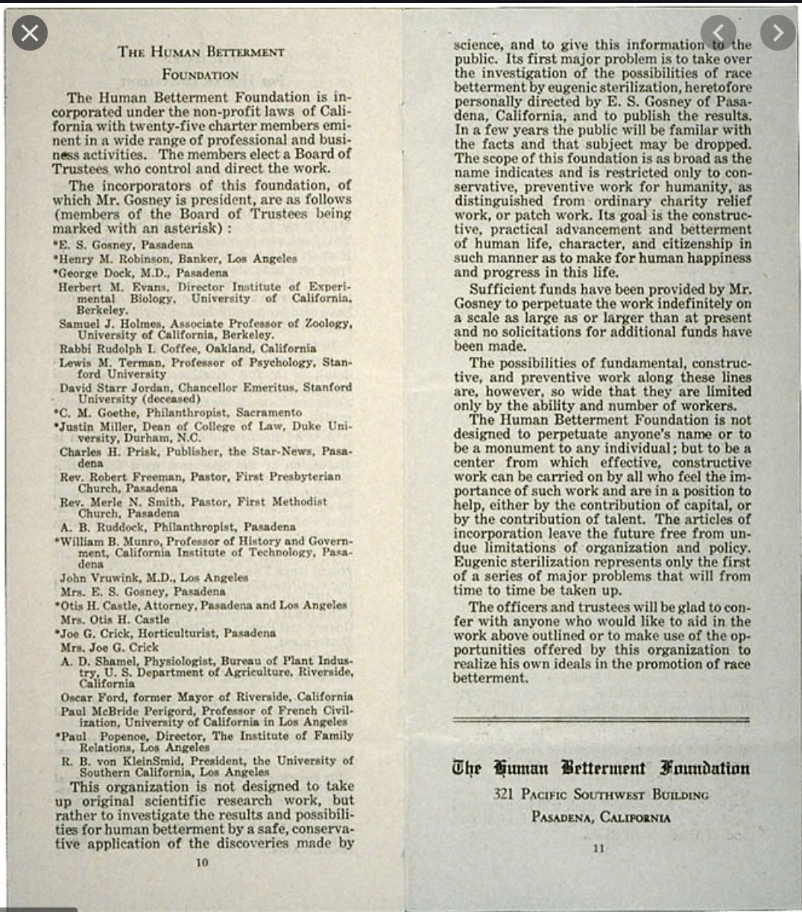
Ok, let’s do some cross-referencing…I don’t have a very good system for this. These kinds of lists have some overlap, but not too much. There’s a handful of SEP members (e.g., Seashore, Dunlap, Woodworth, Yerkes, Poffenberger) that appear on these lists. I’ve started with an excel spreadsheet, but I’m not happy with that method. There are other connections besides membership affiliations. I need to do some thinking about a database approach…
Database thoughts
Consider the problem of assessing possible associations between eugenics and members of a psychology society. So far I’ve been taking a rough collection approach going through the APA presidents, organizers of Psychonomcis, and now looking at SEP. The approach has been to state a name, and then copy some notes about factoids and references that might be relevant in terms of eugenics connections. Once in a while there are some explicit signs, such as being a member of eugenics society.
I’d like some way of assessing these connections more programmatically, such that I apply some kind of similar standard to everyone in terms assessing eugenics associations. Maybe things are just more complicated than this, and every person has their own unique story (of course, this is true too).
I need to reflect on what I’m actually trying to accomplish in this research. It started off as an interesting subject matter that I felt compelled to learn more about. An early thought was that I might be better able to understand aspects of institutional racism in Psychology. For example, if it was true that there was widespread eugenics within Psychology for a long time, especially in the organizations and leadership of Psychology organizations, then perhaps this legacy is responsible for aspects of today’s psychology. And, identifying and describing these insititutional features could then hopefully lead to some deconstruction and reconstruction.
I am still mainly interested in characterizing the institutional aspects of eugenics in psychology, as well as how our modern institutions have reacted to the history. I am not that interested in what specific people “really” thought about issues of the day. For many, I’m sure that eugenics was rationalized as a great morally progressive project for society. Probably also some people changed their minds on committments to various ideologies over time.
My view is that eugenics campaigns were waged on people in society in numerous ways. There are many differnent kinds of eugenics survivors. Psychologists were active and complicit in many ways in eugenics campaigns. This side of psychology should be acknowledged more often.
Anyway, I’ve lost the thread, I’m supposed to be thinking about databases. What kind of database would I want to have?
Let’s go back to the list of SEP members. What kind of database could be useful to ask questions about eugenics activities and each member?
Narrative descriptions. One way to go is to do a biography of each person, entertain the lens of eugenics, and then make some judgment calls, and say a few words in summary about the level or nature of their eugenics activities. This is probably the best to way to portray the nuance of the issues for each person. This would take some time.
Sadly, I have no training in qualitative research, and I’m a hack historian.
However, I have been eyeing something for a while, maybe it could be useful here. I have been developing “semantic” search engines for text corpora using cognitive models of semantics (corpus-based distributional models like BEAGLE). Several examples are available here, including the abstracts from the last Psychonomics conference https://www.semanticlibrarian.com.
I’ve been meaning to take the semantic librarian project into the domain of digital humanities. For example, could a tool for document similarity analysis based on cognitive models be useful in the context of historical research? Maybe a semantic librarian could be helpful here.
TBH, I’ve been anticipating a day like today for a while. For example, I’ve been trying to make semantic librarian’s easier to use by sharing R code necessary to create your own https://crumplab.github.io/RsemanticLibrarian/. Most of the semantic librarians I’ve built are for abstracts, so they are structured in a particular way that supports searching by author and year etc. However, there is a much more general notion to the semantic librarian, which is a kind of semantic mixed-methods database. The minimal example is here https://crumplab.github.io/RsemanticLibrarian/articles/Alice.html. Actually, the best example a wine “Sommeantic Librarian” that I made with a mixed database (basically wine reviews coded by several factors) https://crumplab.shinyapps.io/somme/.
So, partly I guess I’m sayng I should use this stuff here somehow. The semantic librarian approach will take a while. And, sure I could create semantic vector for eugenics and then compare similarity to names and authors in the database. That would be interesting I suspect, but it would be difficulty to know what the similarity scores actually represent. Still, something worth doing I think.
Aside from that, I could try some related methods.
I’m imagining each person as a JSON object, where each person can have properties.
- Person = Name
- eugenics = total score?
- Properties
- eugenics membership: TRUE/FALSE
- eugenics in private correpsondence: TRUE/FALSE
Something like the above, where it could be expandable as I learn that I need to add different kinds of attributes, and then I could develop some way of assessing the “data” for each person, potentially assigning a eugencis score.
At the end of the day it would be nice to figure out these kinds of flavors about individuals
- pro and active in eugenics
- anti-eugenics
- not involved or associated in eugenics
- accidental eugenics
- eugenics adjacent
- functional contributions in the service of eugenics
I guess I’m most interested in assessing a society or organization for its functional contributions to eugenics, as a way of determining the amount and quality of instutional/systemic eugenics for an organization. So, obviously I need to take heed of SS Stevens, and do a better job of operationalizing these things.
| ## note collection |
| At some point I’ll need to think about a scale for eugenics and individual psychologists. I’m not sure how this would work, it could be a point system, or a table of qualitative units. I’ll use this space to think about eugenics and eugenics adjacent features that seem relevant. |
| Explicit features |
| - member/researcher/leader of a eugenics society. E.g., self identified in the Eugenical News, or other Eugenics Society membership lists. - advocates for eugenics in print either in academic work, or in other work |
| Adjacent Features |
| - publishes in a eugenics journal - worked/trained by a known eugenicist - worked in institutions that were heavily influenced by eugenics, such as Yale’s IHR - Signatory of letters supporting eugenicists/race science - intelligence testing - selection procedures (of people) - heredity/twin studies |
| Eugenics Adjacent research |
| It’s clear that eugenics adjacent research exists, but much of it may be unlikely to be identified as such. That’s fine. In using eugenics as a historical lens, it could be enough that this lens is useful for capturing aspects of Psychonomic research in a new light. |
| For example, I would argue base on G. A. Miller’s own words, that his research into information processing capacity limitations was eugenics adjacent research. Rather than IQ, Miller used bits and chunks to characterize bandwidths of information processing capacity, and he clearly saw this as important in the context of eugenics. |
| A larger issue looms for basic cognitive research. If one is studying a basic cognitive process, and one thinks about this process as having qualities of function that are good vs bad, or efficient vs inefficient, or desirable vs undesirable, and one intends to clarify how the process works for the purposes of identifying the quality of that process among individuals in a population, and then does this for the purpose of positive or negative eugenics…well, that would be eugenics wouldn’t it. From my perspective, cognition should take an anti-eugenics stand, and commit to work and perspectives on the work that actively guard against eugenics. |